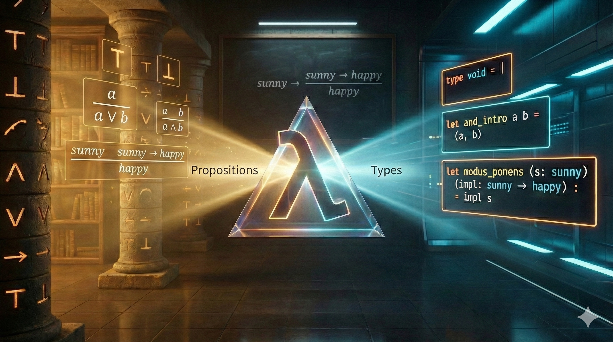
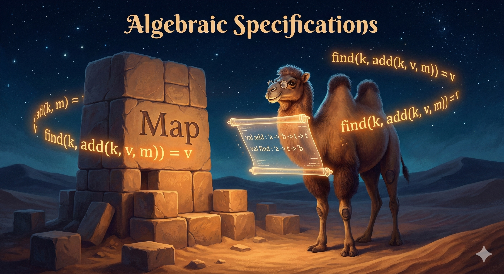
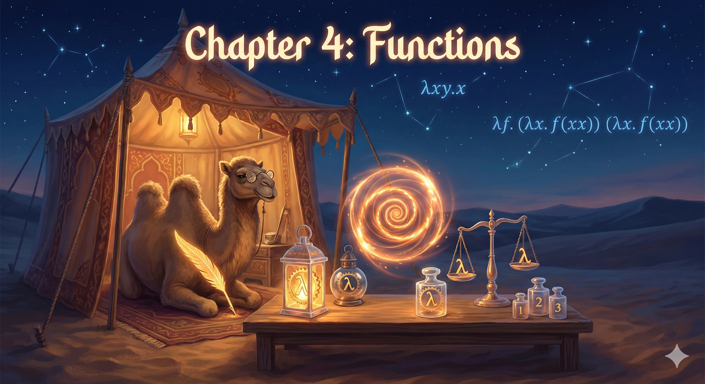
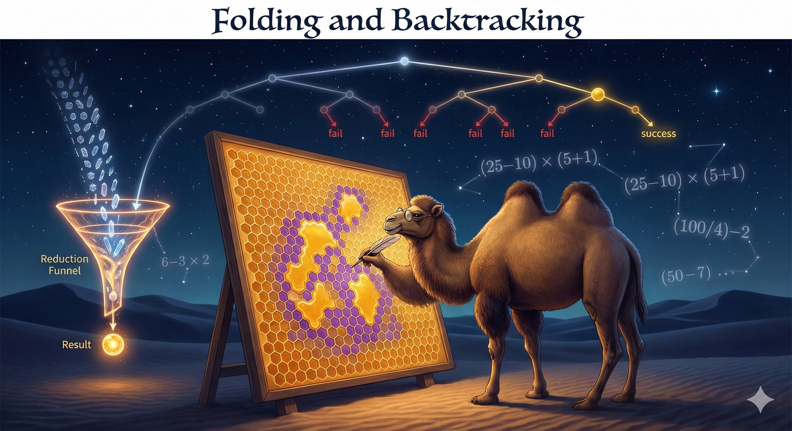
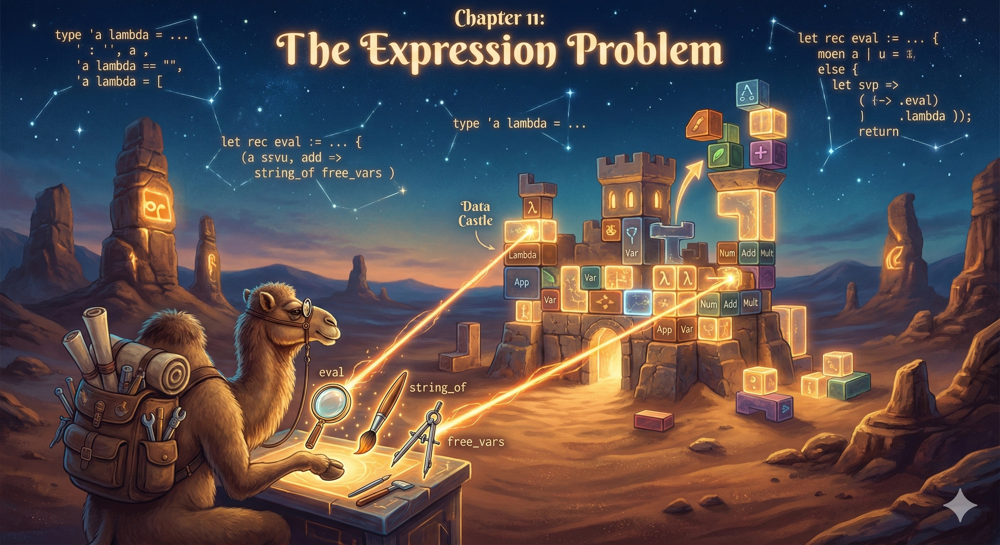
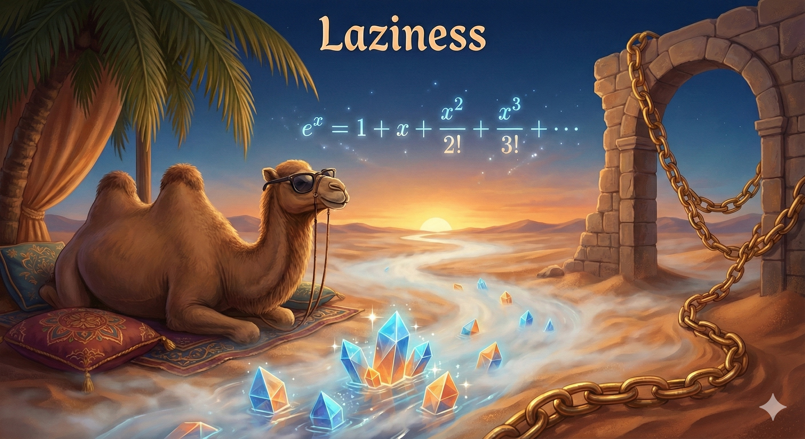
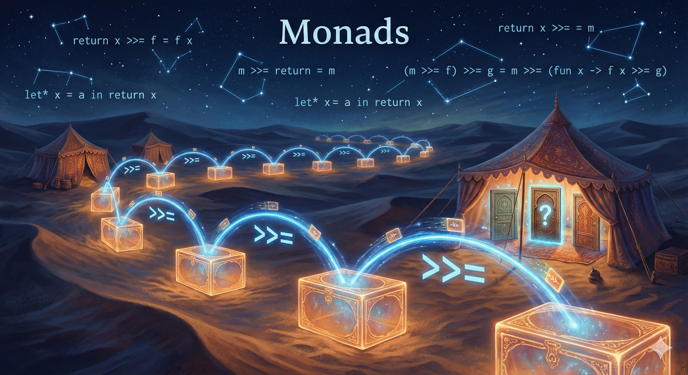
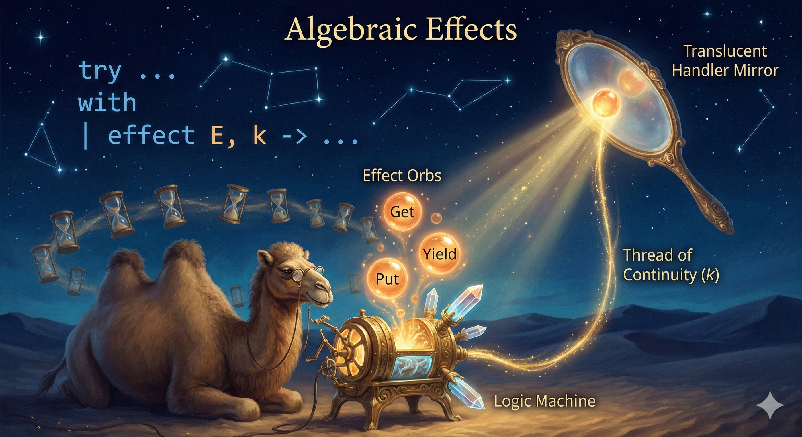

Third Edition: Representations, Interpreters, and Laws
Illustrated by: Gemini 3 Nano Banana
A pair can be a proof of a conjunction. A tree with a hole can describe an editing position. An evaluator can become a machine by turning its continuations into data. This book follows such constructions in OCaml, asking what each representation preserves and how we can check that claim.
The third edition is organized around representations, interpreters, and laws. We use one small expression language across evaluation, folds, binding, parsing and extension. We compare search and probability interpreters with finite reference models. We make ownership and cleanup part of the meaning of an effects program, and return to these concrete examples in the mathematical synthesis.
Each edition builds on the preceding work. The credits distinguish the original book from its later rewrites:
The chapter numbers remain stable, but the four parts give the reading order:
| Part | Chapters | Question |
|---|---|---|
| I. Reasoning about programs | 1, 2, 3, 5; optional 4 | What does a program mean, and which laws does it satisfy? |
| II. Representations and interpreters | 6, 11 | What changes when the same language gets a new representation? |
| III. Computation over time and choices | 7, 8, 9, 10 | Who chooses, when does work happen, and who owns suspended work? |
| IV. Mathematical synthesis | 12 | Which constructions have universal properties, under which hypotheses? |
Each chapter states its prerequisites. Exercises are labeled practice (write or trace a small program), proof (state hypotheses and justify a claim), experiment (measure or find a counterexample), or project (combine several ideas with acceptance criteria). Selected answers accompany the relevant construction. A passing test is evidence about its inputs, not a universal proof.
Install the core test dependencies with
opam install . --deps-only --with-test. The optional GUI
laboratory has separate dependencies listed in its project guide. Use
OCaml 5.3 or later; the effects chapters use its effect-pattern syntax.
From a checkout, run dune runtest for the maintained
examples. Use dune runtest chapter3 projects/expressions
for the evaluator alone. The project sources under
projects/ are ordinary compiled modules, with tests of
laws, failures and resource behavior. Chapter snippets synchronized with
those modules have MDX file references, so editing one without the other
fails the checks.
A code block beginning with # is a toplevel transcript:
type the text after the prompt and finish it with ;;. Other
OCaml blocks contain source-file definitions; do not copy the output of
a transcript into a source file. Blocks with an env label
share a testing environment within their chapter. Some use the chapter’s
prelude.ml; the surrounding text identifies additional
module dependencies. A block marked skip is not checked by
execution and must state its reason.
Edit intro.md and chapterN/README.md, not
the generated root README.md. Build the combined manuscript
and web edition with dune build README.md @site/new_book,
and the PDF with dune build @pdfs/new_book (Pandoc and
LuaLaTeX required). The original functional-lecture*.md,
Lec*.ml, and alternate chapter drafts are historical
sources, not part of the maintained reading route.
The implementation and publication record is in
docs/third-edition.md.

From logic rules to programming constructs
Prerequisites: no OCaml; familiarity with “and”, “or” and “if”. Route: Part I starts here. Continue to Chapter 2 for data representations.
In this chapter, you will:
Conventions. OCaml code blocks are intended to be
runnable unless marked with ocaml skip (used for
illustrative or partial snippets).
Throughout this chapter we use natural deduction in the style of intuitionistic (constructive) logic. This choice is not accidental: it is exactly the fragment of logic that lines up with the “pure” core of functional programming via the Curry–Howard correspondence.
Start the command ocaml in a terminal. Its
# is a prompt, not part of the expression. Type
let double x = x + x;;, then double 3;;. The
toplevel reports a function type and then the integer 6.
Save these definitions in first.ml:
let double x = x + x
let answer = double 3
let () = assert (answer = 6)Load the file from the same directory by typing
#use "first.ml";; at the OCaml prompt (this
#use is a directive, including its #). In a
terminal, ocaml first.ml instead runs the file and exits;
the assertion succeeds silently. This file uses only the standard
library. To change its result, edit the file and reload it. Existing
bindings are shadowed by the new definitions.
The expression double "three" produces a type error:
double needs an integer, but "three" is a
string. Read the expected and actual types before changing the program.
Parentheses group expressions; ;; finishes a toplevel
phrase, and is usually unnecessary between definitions in a file.
let outer = 10
let inner = let outer = 3 in double outer
let () = assert (inner = 6 && outer = 10)The local outer is visible only after its
in. This is scope. Below, a hypothetical
assumption has a scope in exactly the same way that a function parameter
or a local binding has a scope.
What logical connectives do you know? Before we write any code, let us take a step back and think about logic itself. The connectives listed below form the foundation of reasoning, and as we will discover, they also form the foundation of programming.
| \top | \bot | \wedge | \vee | \rightarrow |
|---|---|---|---|---|
| a \wedge b | a \vee b | a \rightarrow b | ||
| truth | falsehood | conjunction | disjunction | implication |
| “trivial” | “impossible” | a and b | a or b | a gives b |
| shouldn’t get | got both | got at least one | given a, we get b |
How can we define these connectives precisely? The key insight is to think in terms of derivation trees. A derivation tree shows how we arrive at conclusions from premises, building up knowledge step by step:
\frac{ \frac{\frac{\,}{\text{a premise}} \; \frac{\,}{\text{another premise}}}{\text{some fact}} \; \frac{\frac{\,}{\text{this we have by default}}}{\text{another fact}}} {\text{final conclusion}}
We define connectives by providing rules for using them. For example, a rule \frac{a \; b}{c} matches parts of the tree that have two premises, represented by variables a and b, and have any conclusion, represented by variable c. These variables act as placeholders that can match any proposition.
Design principle: When defining a connective, we try to use only that connective in its definition. This keeps definitions self-contained and avoids circular dependencies between connectives.
Each logical connective comes with two kinds of rules:
Introduction rules tell us how to produce or construct a connective. If you want to prove “A and B”, the introduction rule tells you what you need: proofs of both A and B.
Elimination rules tell us how to use or consume a connective. If you already have “A and B”, the elimination rules tell you what you can get from it: either A or B (your choice but there is no limit on how many times you decide).
In the table below, text in parentheses provides informal commentary. Letters like a, b, and c are variables that can stand for any proposition.
| Connective | Introduction Rules | Elimination Rules |
|---|---|---|
| \top | \frac{}{\top} | doesn’t have |
| \bot | doesn’t have | \frac{\bot}{a} (i.e., anything) |
| \wedge | \frac{a \quad b}{a \wedge b} | \frac{a \wedge b}{a} (take first) \frac{a \wedge b}{b} (take second) |
| \vee | \frac{a}{a \vee b} (put first) \frac{b}{a \vee b} (put second) | \frac{a \vee b \quad \hyp{[a]^x}{c} \quad \hyp{[b]^y}{c}}{c} using x, y |
| \rightarrow | \frac{\hyp{[a]^x}{b}}{a \rightarrow b} using x | \frac{a \rightarrow b \quad a}{b} |
Read this code beside the table. Values introduce logical structure; patterns and application eliminate it. The empty match is well typed precisely because there is no constructor to consider.
type void = |
type ('a, 'b) either = Left of 'a | Right of 'b
let truth = ()
let absurd (x : void) = match x with _ -> .
let both a b = (a, b)
let first (a, _) = a
let second (_, b) = b
let left a = Left a
let right b = Right b
let cases f g = function Left a -> f a | Right b -> g b
let identity a = a
let apply f a = f a
let () =
assert (first (both 3 true) = 3);
assert (second (both 3 true));
assert (cases ((+) 1) String.length (left 3) = 4);
assert (cases ((+) 1) String.length (right "four") = 4);
assert (apply identity 7 = 7)cases is disjunction elimination: both branches must
produce the same result type. identity introduces the
implication a \rightarrow a;
apply eliminates an implication by providing its argument.
There is no executable call to absurd using a terminating
value, because such a value of void cannot be
constructed.
The notation \hyp{[a]^x}{b} (sometimes written as a tree) matches any subtree that derives b and can use a as an assumption (marked with label x), even though a might not otherwise be warranted. The square brackets around a indicate that this is a hypothetical assumption, not something we have actually established. The superscript x is a label that helps us track which assumption gets “discharged” when we complete the derivation.
To prove an implication, assume its input proposition and construct
the output. The assumption can be used more than once, just as
fun x -> (x, x) uses its parameter twice. It is
available only inside the hypothetical derivation, just as
x is available only inside the function body. Discharging
the assumption means that the resulting implication no longer requires
that input to be present until it is applied.
The elimination rule for disjunction deserves special attention because it represents reasoning by cases, one of the most fundamental proof techniques.
Suppose we know “A or B” is true, but we do not know which one. How can we still derive a conclusion C? We must show that C follows regardless of which alternative holds. In other words, we need to prove: (1) assuming A, we can derive C, and (2) assuming B, we can derive C. Since one of A or B must be true, and both lead to C, we can conclude C.
In cases above, knowing Left a or
Right b is enough to choose a branch. The common result
type enforces that either branch establishes the same conclusion. We do
not need to know which branch will be chosen when we define the
function.
We need one more kind of rule to do serious math: reasoning by induction. This rule is somewhat similar to reasoning by cases, but instead of considering a finite number of alternatives, it allows us to prove properties that hold for infinitely many cases, such as all natural numbers.
Here is the example rule for induction on natural numbers:
\frac{p(0) \quad \hyp{[p(x)]^x}{p(x+1)}}{p(n)} \text{ by induction, using } x
This rule says: we get property p for any natural number n, provided we can do two things:
Here x is a unique variable representing an arbitrary natural number. We cannot substitute a particular number for it because we write “using x” on the side, indicating that the derivation works for any choice of x.
The power of induction lies in this: once we have the base case and the inductive step, we have implicitly covered all natural numbers. Starting from p(0), we can derive p(1), then p(2), then p(3), and so on, reaching any natural number n we wish.
A structural recursion makes the decreasing argument visible:
type nat = Zero | Succ of nat
let rec count = function Zero -> 0 | Succ n -> 1 + count n
let () = assert (count (Succ (Succ Zero)) = 2)Each recursive call receives a smaller finite nat. This
supplies a termination argument. OCaml also permits general recursion,
including a function that calls itself on the same argument forever. The
type checker does not certify termination. The proof/program
correspondence below applies to the terminating, pure fragment, not to
arbitrary OCaml programs that may loop or raise exceptions. The integer
result of count has machine bounds; a mathematical
induction about unbounded natural numbers is a separate claim.
The Curry–Howard correspondence, also known as “propositions as types” or the “proofs-as-programs” interpretation. In a total, pure, intuitionistic setting, this correspondence is not just a metaphor: proof rules and typing rules are the same kind of object.
Under this correspondence:
When you write a well-typed program, you are (implicitly) constructing a derivation tree that proves a typing judgement.
The following table shows how each logical connective corresponds to a programming construct in OCaml:
| Logic | OCaml type (example) | Example program | Intuition |
|---|---|---|---|
| \top | unit |
() |
The trivially true proposition; the type with exactly one value |
| \bot | void (an empty type) |
match v with _ -> . |
Falsehood; a type with no values |
| \wedge | * |
(,) |
Conjunction corresponds to pairs: having both A and B |
| \vee | a variant type | Left x / Right y |
Disjunction corresponds to sums: having either A or B |
| \rightarrow | -> |
fun |
Implication corresponds to functions: given A, produce B |
| induction | - | structurally decreasing recursion | Inductive proofs correspond to terminating recursive definitions |
For example, the identity function corresponds to the tautology a \rightarrow a:
# fun x -> x;;
- : 'a -> 'a = <fun>Let us now see the precise typing rules for each OCaml construct, presented in the same style as our logical rules:
Typing rules for OCaml constructs:
Unit (truth): \frac{}{\texttt{()} : \texttt{unit}}
The unit value () always has type unit.
This is like \top in logic: we can
always produce it without any premises.
Empty type (falsehood): in OCaml we can define an empty type (a type with no constructors):
type void = |There is no way to construct a value of type void using
ordinary, terminating code. But if we somehow have a
v : void, then we can derive anything from it (falsity
elimination):
let absurd (v : void) : 'a =
match v with _ -> .This corresponds closely to the logical rule \frac{\bot}{a}.
OCaml also has effects (notably exceptions). Because
raise e never returns normally, the type checker allows it
to have any result type:
\frac{e : \texttt{exn}}{\texttt{raise } e : a}
This is useful in practice, but it is also a good reminder that
effects complicate the neat “proofs-as-programs” story.
Pair (conjunction):
p : a * b we can extract either
component (e.g. by pattern matching, or via
fst/snd)To construct a pair, you need both components. To use a pair, you can extract either component. This mirrors conjunction perfectly: to prove “A and B”, you need proofs of both; given “A and B”, you can conclude either A or B.
Variant (disjunction): first, we define a sum type (a two-way choice):
type ('a, 'b) either = Left of 'a | Right of 'bx : a we get
Left x : (a, b) either, and from y : b we get
Right y : (a, b) eithert : (a, b) either and a branch for
each case, produce a result c (pattern matching)The shape of the elimination rule is exactly “reasoning by cases”: to
use an either, you must handle both Left and
Right.
let either f g = function
| Left x -> f x
| Right y -> g yA built-in example is bool, which you can think of as a
two-constructor variant; the if ... then ... else ...
expression is just a specialized form of case analysis on a boolean.
let choose b x y =
if b then x else y
let choose' b x y =
match b with
| true -> x
| false -> yTo construct a variant, you only need one of the alternatives. To use a variant, you must handle all possible cases (pattern matching). This mirrors disjunction: to prove “A or B”, you only need one; to use “A or B”, you must consider both possibilities.
Function (implication):
To construct a function, you assume you have an input of type a (the parameter x) and show how to produce a result of type b. To use a function, you apply it to an argument. This mirrors implication: to prove “A implies B”, assume A and derive B; given “A implies B” and A, conclude B.
Recursion (induction): recursion is not a connective, but it matches the shape of induction: in a recursive definition you are allowed to assume the function being defined (the “induction hypothesis”) when defining its body.
General recursion alone is not an induction proof:
let rec loop x = loop x never returns. The proof
interpretation requires termination, for example by recursion on a
strictly smaller substructure.
In OCaml, recursion is introduced with let rec (there is
no standalone rec expression).
Writing out expressions and types repetitively quickly becomes tedious. More importantly, without definitions we cannot give names to our concepts, making code harder to understand and maintain. This is why we need definitions.
Type definitions are written: type ty =
some type.
In OCaml, disjunction-like types are not written as something
like a | b directly; instead, you define a variant
type and then use its constructors. For example:
type int_string_choice = A of int | B of stringThis allows us to write A x : int_string_choice for any
x : int, and B y : int_string_choice for any
y : string.
Why do we need to define variant types? The reasons are:
exhaustiveness checks, performance of generated code, and ease of type
inference. When OCaml sees A 5, it needs to figure out (or
“infer”) the type. Without a type definition, how would OCaml know
whether this is A of int | B of string or
A of int | B of float | C of bool? The definition tells
OCaml exactly what variants exist. When you match
| A i -> ..., the compiler will warn you if you forgot
to also cover C b in your match patterns.
OCaml does provide an alternative: polymorphic variants,
written with a backtick. We can write
`A x : [ `A of a | `B of b ]. With ` variants,
OCaml does infer what other variants might exist based on usage. These
types are powerful and flexible; we will discuss them in chapter
11.
Tuple elements do not need labels because we always know at which position a tuple element stands: the first element is first, the second is second, and so on. However, having labels makes code much clearer, especially when tuples have many components or components of the same type. For this reason, we can define a record type:
type int_string_record = { a : int; b : string }and create its values: {a = 7; b = "Mary"}. OCaml 5.4
and newer also support labeled tuples, we will not discuss
these.
We access the fields of records using the dot notation:
{a = 7; b = "Mary"}.b = "Mary". Unlike tuples where you
must remember “the second element is the name”, with records you can
write .b to get the field named b.
In many presentations of the Curry–Howard correspondence (and in
programming language theory), recursion is introduced via a standalone
operator often called fix. OCaml does not have a standalone
fix expression: recursion is introduced only as part of a
let rec definition.
This brings us to expression definitions, which let us give names to values. The typing rules for definitions are a bit more complex than what we have seen so far:
\frac{e_1 : a \quad \hyp{[x : a]}{e_2 : b}}{\texttt{let } x = e_1 \texttt{ in } e_2 : b}
This rule says: if e_1 has type
a, and assuming x has type a
we can show that e_2 has type b, then the whole let expression
has type b. Interestingly, this rule is
equivalent to introducing a function and immediately applying it:
let x = e1 in e2 behaves the same as
(fun x -> e2) e1. This is the introduction rule for a
function followed by its elimination rule.
For recursive definitions, we need an additional rule:
\frac{\hyp{[x : a]}{e_1 : a} \quad \hyp{[x : a]}{e_2 : b}}{\texttt{let rec } x = e_1 \texttt{ in } e_2 : b}
Notice the crucial difference: in the recursive case, x can appear in e_1 itself! This is what allows functions to call themselves. The name x is visible both in its own definition (e_1) and in the body that uses the definition (e_2).
These rules are slightly simplified. The full rules involve a concept called polymorphism, which we will cover in a later chapter. Polymorphism explains how the same function can work with different types.
Understanding scope—where names are visible—is essential for reading and writing OCaml programs.
Type definitions we have seen above are
global: they need to be at the top-level (not nested in
expressions), and they extend from the point they occur till the end of
the source file or interactive session. A bare type
declaration cannot occur inside an expression, but a function can
introduce a type through a local module; we will meet modules in Chapter
5.
let-in definitions for
expressions: let x = e1 in e2 are local—the name
x is only visible within e_2. Once you exit the in part,
x no longer exists. This is useful for
temporary values that should not pollute the global namespace.
let definitions without
in are global: placing let x = e1 at the
top-level makes x visible from after
e_1 till the end of the source file or
interactive session. This is how you define functions and values that
the rest of your program can use.
In the interactive session (toplevel/REPL), we mark the end of a
top-level “sentence” with ;;. This tells OCaml “I am done
typing, please evaluate this.” In source files compiled by the build
system, ;; is unnecessary because the end of each
definition is clear from context.
Operators like +, *, <,
= are simply names of functions. In OCaml, there is nothing
magical about operators; they are ordinary functions that happen to have
special characters in their names and can be used in infix position
(between their arguments).
Just like other names, you can define your own operators:
# let (+:) a b = String.concat "" [a; b];;
val ( +: ) : string -> string -> string = <fun>
# "Alpha" +: "Beta";;
- : string = "AlphaBeta"Notice the asymmetry here: when defining an operator, we
wrap it in parentheses to tell OCaml “this is the name I am defining”.
When using the operator, we write it in the normal infix
position between its arguments. This asymmetry exists because the
definition syntax needs to distinguish between “the name
+:” and “the expression a +: b”.
OCaml’s built-in arithmetic operators are not overloaded across numeric types: integer and floating-point arithmetic use different operators. This is distinct from parametric polymorphism, which allows operations such as equality to have polymorphic types:
+, *, / work for
integers+., *., /. work for floating
point numbersThis design choice makes type inference simpler and more predictable.
When you see x + y, OCaml knows immediately that
x and y must be integers.
Exception: The comparison operators
<, =, <=,
>=, <> do work for all values other
than functions. These are called polymorphic comparisons.
The following exercises are adapted from Think OCaml: How to Think Like a Computer Scientist by Nicholas Monje and Allen Downey. They will help you get comfortable with OCaml’s syntax and type system.
Assume that we execute the following assignment statements:
let width = 17
let height = 12.0
let delimiter = '.'For each of the following expressions, write the value of the expression and the type (of the value of the expression), or the resulting type error.
width/2width/.2.0height/31 + 2 * 5delimiter * 5Practice using the OCaml interpreter as a calculator:
You’ve probably heard of the Fibonacci numbers before, but in case you haven’t, they’re defined by the following recursive relationship:
\begin{cases} f(0) = 0 \\ f(1) = 1 \\ f(n+1) = f(n) + f(n-1) & \text{for } n = 1, 2, \ldots \end{cases}
Write a recursive function on nonnegative integers to calculate these
numbers. Reject negative inputs. Check f 0 = 0,
f 1 = 1, and f 10 = 55; explain why the
argument decreases. Machine integer overflow limits the numerical
contract.
A palindrome is a word that is spelled the same backward and forward, like “noon” and “redivider”. Recursively, a word is a palindrome if the first and last letters are the same and the middle is a palindrome.
The following are functions that take a string argument and return the first, last, and middle letters:
let first_char word = word.[0]
let last_char word =
let len = String.length word - 1 in
word.[len]
let middle word =
let len = String.length word - 2 in
String.sub word 1 lenmiddle with a string with two letters?
One letter? What about the empty string ""?is_palindrome that takes a
string argument and returns true if it is a palindrome and
false otherwise.The greatest common divisor (GCD) of a and b is the largest number that divides both of them with no remainder.
One way to find the GCD of two numbers is Euclid’s algorithm, which is based on the observation that if r is the remainder when a is divided by b, then \gcd(a, b) = \gcd(b, r). As a base case, we can consider \gcd(a, 0) = a.
Write gcd on nonnegative integers a and
b, taking gcd 0 0 = 0 by convention. Check
(0, 7), (7, 0) and (54, 24).
Proof: show that the second argument strictly decreases
whenever it is positive.
If you need help, see http://en.wikipedia.org/wiki/Euclidean_algorithm.
For byte strings, lengths zero and one are palindromes. Check this
before calling first_char, last_char, or
middle, whose contracts exclude those lengths. This is a
byte-level exercise, not a Unicode grapheme algorithm.
let rec is_palindrome word =
String.length word < 2 ||
(first_char word = last_char word && is_palindrome (middle word))
let () =
assert (is_palindrome "");
assert (is_palindrome "a");
assert (is_palindrome "noon");
assert (not (is_palindrome "not"))Algebraic data types and some curious analogies
In this chapter, we will deepen our understanding of OCaml’s type system by working through type inference examples by hand. Then we will explore algebraic data types—a cornerstone of functional programming that allows us to define rich, structured data. Along the way, we will discover a surprising and beautiful connection between these types and ordinary polynomials from high-school algebra.
In this chapter, you will:
Prerequisites: functions, scope and pairs from Chapter 1. Route: Part I. This chapter’s contexts return as machine frames in Chapter 3 and as mathematical constructions in Chapter 12.
For a refresher, let us apply the type inference rules introduced in
Chapter 1 to some simple examples. We will start with the identity
function fun x -> x—perhaps the simplest possible
function, yet one that reveals important aspects of polymorphism. In the
derivations below, [?] means “unknown
(to be inferred)”.
We begin with an incomplete derivation:
\frac{[?]}{\texttt{fun x -> x} : [?]}
Using the \rightarrow introduction
rule, we need to derive the body x assuming x
has some type a:
\frac{\hyp{[x : a]^x}{\texttt{x} : a}}{\texttt{fun x -> x} : [?] \rightarrow [?]}
The premise is a hypothetical derivation: inside the body we are
allowed to use the assumption x : a. Since the body is just
x, the result type is also a, and we conclude:
\frac{\hyp{[x : a]^x}{\texttt{x} : a}}{\texttt{fun x -> x} : a \rightarrow a}
Because a is arbitrary (we made no
assumptions constraining it), OCaml introduces a type variable
'a to represent it. This is how polymorphism emerges
naturally from the inference process—the identity function can work with
values of any type:
# fun x -> x;;
- : 'a -> 'a = <fun>Now let us try something that will constrain the types more:
fun x -> x+1. This is the same as
fun x -> ((+) x) 1 (try it in OCaml to verify!). The
addition operator forces specific types upon us.
We will use the notation [?\alpha] to mean “type unknown yet, but the same as in other places marked [?\alpha].” This notation helps us track how constraints propagate through the derivation.
Starting the derivation and applying \rightarrow introduction:
\frac{\frac{[?]}{\texttt{((+) x) 1} : [?\alpha]}}{\texttt{fun x -> ((+) x) 1} : [?] \rightarrow [?\alpha]}
Applying \rightarrow elimination
(function application) to ((+) x) 1:
\frac{\frac{\frac{[?]}{\texttt{(+) x} : [?\beta] \rightarrow [?\alpha]} \quad \frac{[?]}{\texttt{1} : [?\beta]}}{\texttt{((+) x) 1} : [?\alpha]}}{\texttt{fun x -> ((+) x) 1} : [?] \rightarrow [?\alpha]}
We know that 1 : int, so [?\beta] = \texttt{int}:
\frac{\frac{\frac{[?]}{\texttt{(+) x} : \texttt{int} \rightarrow [?\alpha]} \quad \frac{\,}{\texttt{1} : \texttt{int}}^{\text{(constant)}}}{\texttt{((+) x) 1} : [?\alpha]}}{\texttt{fun x -> ((+) x) 1} : [?] \rightarrow [?\alpha]}
Applying function application again to (+) x:
\frac{\frac{\frac{\frac{[?]}{\texttt{(+)} : [?\gamma] \rightarrow \texttt{int} \rightarrow [?\alpha]} \quad \frac{[?]}{\texttt{x} : [?\gamma]}}{\texttt{(+) x} : \texttt{int} \rightarrow [?\alpha]} \quad \frac{\,}{\texttt{1} : \texttt{int}}^{\text{(constant)}}}{\texttt{((+) x) 1} : [?\alpha]}}{\texttt{fun x -> ((+) x) 1} : [?\gamma] \rightarrow [?\alpha]}
Since (+) : int -> int -> int, we have [?\gamma] = \texttt{int} and [?\alpha] = \texttt{int}:
\frac{\frac{\frac{\frac{\,}{\texttt{(+)} : \texttt{int} \rightarrow \texttt{int} \rightarrow \texttt{int}}^{\text{(constant)}} \quad \frac{\,}{\texttt{x} : \texttt{int}}^x}{\texttt{(+) x} : \texttt{int} \rightarrow \texttt{int}} \quad \frac{\,}{\texttt{1} : \texttt{int}}^{\text{(constant)}}}{\texttt{((+) x) 1} : \texttt{int}}}{\texttt{fun x -> ((+) x) 1} : \texttt{int} \rightarrow \texttt{int}}
When there are several arrows “on the same depth” in a function type,
it means that the function returns a function. For example,
(+) : int -> int -> int is just a shorthand for
(+) : int -> (int -> int). The arrow associates to
the right, so we can omit the parentheses.
This is very different from:
\texttt{fun f -> (f 1) + 1} : (\texttt{int} \rightarrow \texttt{int}) \rightarrow \texttt{int}
In the first case, (+) is a function that takes an
integer and returns a function from integers to integers. In the second
case, we have a function that takes a function as an argument—a
higher-order function. The parentheses around
int -> int are essential here; without them, the meaning
would be completely different.
This style of defining multi-argument functions, where each function takes one argument and returns another function expecting the remaining arguments, is called curried form (named after logician Haskell Curry). It enables a powerful technique called partial application.
For example, instead of writing (fun x -> x+1), we
can simply write ((+) 1). Here we apply (+) to
just one argument, getting back a function that adds 1 to its input.
What expanded form does ((+) 1) correspond to exactly
(computationally)?
Think about it before reading on…
It corresponds to fun y -> 1 + y. We have “baked in”
the first argument, and the resulting function waits for the second.
We will become more familiar with functions returning functions when we study the lambda calculus in a later chapter.
In Chapter 1, we learned about the unit type and variant
types like:
type int_string_choice = A of int | B of stringWe also covered tuple types, record types, and type definitions. Now let us explore these concepts more deeply, building up to the powerful notion of algebraic data types.
Variants do not have to carry arguments. Instead of writing
A of unit, we can simply use A. This is more
convenient and idiomatic:
type color = Red | Green | BlueThis defines a type with exactly three possible values—no more, no less. The compiler knows this, which enables exhaustive pattern matching checks.
A subtle point about OCaml: In OCaml, variants take
multiple arguments rather than taking tuples as arguments. This means
A of int * string is different from
A of (int * string). The first takes two separate
arguments, while the second takes a single tuple argument. This
distinction is usually not important—until you get bitten by it in some
corner case! For most purposes, you can ignore it.
Here is where things get really interesting: type definitions can be recursive! This allows us to define data structures of arbitrary size using a finite definition:
type int_list = Empty | Cons of int * int_listLet us see what values inhabit int_list. The definition
tells us there are two ways to build an int_list:
Empty represents the empty list—a list with no
elementsCons (5, Empty) is a list containing just 5Cons (5, Cons (7, Cons (13, Empty))) is a list
containing 5, 7, and 13.Notice how Cons takes an integer and another
int_list, allowing us to chain together as many elements as
we like. This recursive structure is the essence of how functional
languages represent unbounded data.
The built-in type bool really does behave like a
two-constructor variant with values true and
false—but note a small OCaml wrinkle: user-defined
constructors must start with a capital letter, while a few built-in
constructors like true, false,
[], and (::) are special-cased.
Similarly, int can be thought of as a very
large finite variant (“one constructor per integer”), even though the
compiler implements it as an efficient machine integer rather than as a
gigantic sum type.
Our int_list type only works with integers. But what if
we want a list of strings? Or a list of booleans? We would have to
define separate types for each, duplicating the same structure.
Type definitions can be parametric with respect to the types of their components. This allows us to define generic data structures that work with any element type. OCaml already has a built-in parametric list type, so to avoid shadowing it we will define our own simplified list type:
type 'a my_list = Empty | Cons of 'a * 'a my_listThe 'a is a type parameter—a placeholder that
gets filled in when we use the type. We can have a
string my_list, an int my_list, or even an
(int my_list) my_list (a list of lists of integers).
Several conventions and syntax rules apply to parametric types:
Type variables must start with '. When printing
inferred types, OCaml may rename these variables, so it is customary to
stick to the standard names 'a, 'b,
'c, 'd, etc.
The OCaml syntax places the type parameter before the type name, mimicking English word order. A silly example that reads almost like English:
type 'white_color dog = Dog of 'white_colorThis defines a “white-color dog” type—the syntax reads naturally!
With multiple parameters, OCaml uses parentheses:
type ('a, 'b) choice = Left of 'a | Right of 'bCompare this to F# syntax:
type choice<'a,'b> = Left of 'a | Right of 'b
And Haskell syntax:
data Choice a b = Left a | Right b
Different languages have different conventions, but the underlying concept is the same.
OCaml provides various syntactic conveniences—sometimes called syntactic sugar—that make code more pleasant to write and read. Let us survey the most important ones.
Names of variants, called constructors, must start with a capital letter. If we wanted to define our own booleans, we would write:
type my_bool = True | FalseOnly constructors and module names can start with capital letters in OCaml. Everything else (values, functions, type names) must start with a lowercase letter. This convention makes it easy to distinguish constructors at a glance.
(As noted above, a few built-in constructors like true,
false, [], and (::) are special
exceptions to the capitalization rule.)
Modules are organizational units (like “shelves”) containing
related values. For example, the List module provides
operations on lists, including List.map and
List.filter. We will learn more about modules in later
chapters.
Did we mention that we can use dot notation to access record fields?
The syntax record.field extracts a field value. For
example, if we have let person = {name="Alice"; age=30}, we
can write person.name to get "Alice".
Several syntactic shortcuts make function definitions more concise. These are worth memorizing, as you will see them constantly in OCaml code:
fun x y -> e stands for
fun x -> fun y -> e. Note that
fun x -> fun y -> e parses as
fun x -> (fun y -> e). This shorthand aligns with
curried form—we can write multi-argument functions without nesting
fun expressions.
function A x -> e1 | B y -> e2 stands for
fun p -> match p with A x -> e1 | B y -> e2. The
general form is: function PATTERN-MATCHING stands for
fun v -> match v with PATTERN-MATCHING. This is handy
when you want to immediately pattern-match on a function’s
argument.
let f ARGS = e is a shorthand for
let f = fun ARGS -> e. This is probably the most common
way to define functions in practice.
Pattern matching is one of the most powerful features of OCaml and similar languages. It lets us examine the structure of data and extract components in a single, elegant construct.
Recall that we introduced fst and snd as
means to access elements of a pair. But what about larger tuples? There
is no built-in thd for the third element. The fundamental
way to access any tuple—or any algebraic data type—uses the
match construct. In fact, fst and
snd can easily be defined using pattern matching:
let fst p = match p with (a, b) -> a
let snd p = match p with (a, b) -> bThe pattern (a, b) destructures the pair,
binding its first component to a and its second to
b. We then return whichever component we want.
Pattern matching also works with records, letting us extract multiple fields at once:
type person = { name : string; surname : string; age : int }
let greet_person () =
match { name = "Walker"; surname = "Johnnie"; age = 207 } with
| { name = _; surname = sn; age = _ } -> "Hi " ^ sn ^ "!"Here we match against a record pattern. Note that we use wildcards
_ for name and age (ignoring
them), while binding surname to sn—then use
sn in the greeting.
The left-hand sides of -> in match
expressions are called patterns. Patterns describe the
structure of values we want to match against. They can include:
1, "hello", or
true)None, Some x, or
Cons (h, t))Patterns can be nested to arbitrary depth, allowing us to match complex structures in one go:
match Some (5, 7) with
| None -> "sum: nothing"
| Some (x, y) -> "sum: " ^ string_of_int (x + y)Here Some (x, y) is a nested pattern: we match
Some of something, and that something must be a
pair, whose components we bind to x and y.
A pattern can simply bind the entire value without destructuring.
Writing match f x with v -> ... is the same as
let v = f x in .... This is occasionally useful when you
want the syntax of match but do not need to take the value
apart.
When we do not need a value in a pattern, it is good practice to use
the underscore _, which is a wildcard. The
wildcard matches anything but does not bind it to a name. This signals
to the reader (and the compiler) that we are intentionally ignoring that
part:
let fst (a, _) = a
let snd (_, b) = bUsing _ instead of an unused variable name avoids
compiler warnings about unused bindings.
A variable can only appear once in a pattern. This property is called
linearity. You might think this is a limitation—what if we want
to check that two parts of a structure are equal? We cannot write
(x, x) to match pairs with equal components.
However, we can add conditions to patterns using when,
so linearity is not really a limitation in practice:
let describe_point p =
match p with
| (x, y) when x = y -> "diag"
| _ -> "off-diag"The when clause acts as a guard: the pattern matches
only if both the structure matches and the condition is
true.
Here is a more elaborate example showing how to implement a
comparison function (without shadowing the standard
compare):
let compare_int a b =
match a, b with
| (x, y) when x < y -> -1
| (x, y) when x = y -> 0
| _ -> 1Notice how we match against the tuple (a, b) in
different ways, using guards to distinguish the cases.
We can skip unused fields of a record in a pattern. Only the fields we care about need to be mentioned. This keeps patterns concise and means we do not have to update every pattern when we add a new field to a record type.
We can compress patterns by using | inside a single
pattern to match multiple alternatives. This is different from having
multiple pattern clauses—it lets us share a single right-hand side for
several patterns:
type month =
| Jan | Feb | Mar | Apr | May | Jun
| Jul | Aug | Sep | Oct | Nov | Dec
type weekday = Mon | Tue | Wed | Thu | Fri | Sat | Sun
type calendar_date =
{ year : int; month : month; day : int; weekday : weekday }
let day =
{ year = 2012; month = Feb; day = 14; weekday = Tue }
let day_kind =
match day with
| { weekday = Sat | Sun; _ } -> "Weekend!"
| _ -> "Work day"The pattern Sat | Sun matches either Sat or
Sun. This is much cleaner than writing two separate clauses
with the same right-hand side.
asSometimes we want to both destructure a value and keep a
reference to the whole thing (or some intermediate part). We use
(pattern as v) to name a nested pattern, binding the
matched value to v:
match day with
| {weekday = (Mon | Tue | Wed | Thu | Fri as wday); _}
when not (day.month = Dec && day.day = 24) ->
Some (work (get_plan wday))
| _ -> NoneThis example demonstrates several features working together:
as wday clause binds the matched weekday to the
variable wdaywhen guard checks that it is not Christmas Evewday is then used in the expression
get_plan wdayThe pattern gives names only to the data used by the branch.
Three interpretations must be kept separate:
| Interpretation | What it tells us | What it does not establish |
|---|---|---|
| Finite cardinality | A sum has a+b inhabitants and a product has ab | A particular conversion algorithm |
| Formal power series | The coefficient of z^n counts shapes of size n | Numerical convergence at a chosen real z |
| Type isomorphism | Two functions are inverse on all inputs | Equality merely because a symbolic equation looks plausible |
For lists with one mark per element, L(z)=1+zL(z) gives L(z)=\sum_{n\geq0}z^n. For binary trees marked at nodes, T(z)=1+zT(z)^2 gives coefficients 1,1,2,5,\ldots; the root splits the remaining nodes between two ordered subtrees. These are formal coefficient identities. Interpreting a parameter as the cardinality of a set is a different operation from evaluating a series at a real number.
The translation from types to mathematical expressions works as follows:
| (variant choice) with + (addition)* (tuple product) with \times (multiplication); as \times)We also need translations for some special types:
The void type (a type with no constructors, hence no values):
type void = |Since no values can be constructed, it represents emptiness—translate it as 0.
The unit type has exactly one value, so
translate it as 1. Since variants
without arguments behave like variants of unit, translate
them as 1 as well.
The bool type has exactly two values
(true and false), so translate it as 2.
Types like int, string,
float, and type parameters are treated as variables. We do
not care about their exact number of values; we just give them symbolic
names like x, y, etc.
Defined types translate according to their definitions (substituting variables as necessary).
Give a name to the type being defined (representing a function of the introduced variables). For finite, nonrecursive sum-and-product types, the result is a polynomial counting possible values. Recursive types instead give equations for formal power series counting finite structures. Lists yield a rational series; trees generally yield algebraic series that are not rational. Unrestricted subtraction, division, and identities involving infinite cardinalities are not automatically type isomorphisms: justify a proposed isomorphism with inverse functions.
We will use the equations to propose representations, then write conversions to check them.
type ymd = { year : int; month : int; day : int }A simple “year-month-day” record is a product of three
int fields. Translating to a polynomial (using x for int):
D = x \times x \times x = x^3
The cube makes sense: this record is essentially a triple of integers.
The built-in option type is defined as:
type 'a option = None | Some of 'aTranslating (using x for the type
parameter 'a):
O = 1 + x
This reads as: an option is either nothing (1) or something of type x. The two summands record the two constructor cases.
This skipped declaration recalls the list representation solely for the series calculation; it is not a second live definition in this environment.
type 'a my_list = Empty | Cons of 'a * 'a my_listTranslating (where L represents the list type itself, and x represents the element type):
L = 1 + x \cdot L
This is a recursive equation! A list is either empty (1) or an element times another list (x \cdot L). If you solve this equation algebraically, you get L = \frac{1}{1-x} = 1 + x + x^2 + x^3 + \ldots, which corresponds to: a list is either empty, or has one element, or has two elements, etc.
type btree = Tip | Node of int * btree * btreeTranslating:
T = 1 + x \cdot T \cdot T = 1 + x \cdot T^2
A binary tree is either a tip (1) or a node containing a value and two subtrees (x \cdot T^2).
Here is the remarkable payoff: when translations of two types are equal according to the laws of high-school algebra, the types are isomorphic. This means there exist bijective (one-to-one and onto) functions between them—you can convert from one type to the other and back without losing any information.
Let us play with the binary tree polynomial and see where algebra takes us:
\begin{aligned} T &= 1 + x \cdot T^2 \\ &= 1 + x \cdot T + x^2 \cdot T^3 \\ &= 1 + x + x^2 \cdot T^2 + x^2 \cdot T^3 \\ &= 1 + x + x^2 \cdot T^2 \cdot (1 + T) \\ &= 1 + x \cdot (1 + x \cdot T^2 \cdot (1 + T)) \end{aligned}
Each step uses standard algebraic manipulations: substituting T = 1 + xT^2, expanding, factoring, and rearranging. The result is a different but algebraically equivalent expression.
Now let us translate this resulting expression back to a type:
type repr =
(int * (int * btree * btree * btree option) option) optionReading the polynomial 1 + x \cdot (1 + x
\cdot T^2 \cdot (1 + T)) from outside in: we have an option (the
outermost 1 + \ldots), whose
Some case contains an int times another
option, and so on.
The challenge is to find isomorphism functions with signatures:
val iso1 : btree -> repr
val iso2 : repr -> btreeThese functions should satisfy: for all trees t,
iso2 (iso1 t) = t, and for all representations
r, iso1 (iso2 r) = r. Can you write them?
Here is my first attempt, trying to guess the pattern directly:
# let iso1 (t : btree) : repr =
match t with
| Tip -> None
| Node (x, Tip, Tip) -> Some (x, None)
| Node (x, Node (y, t1, t2), Tip) ->
Some (x, Some (y, t1, t2, None))
| Node (x, Node (y, t1, t2), t3) ->
Some (x, Some (y, t1, t2, Some t3));;
Warning 8: this pattern-matching is not exhaustive.
Here is an example of a value that is not matched:
Node (_, Tip, Node (_, _, _))I forgot about one case! The case
Node (_, Tip, Node (_, _, _))—a node with an empty left
subtree and non-empty right subtree—was not covered. It seems difficult
to guess the solution directly when trying to map the complex final form
all at once.
Have you found it on your first try? If so, congratulations! Most people do not. This illustrates an important principle: complex transformations are easier to get right when broken into smaller steps.
Let us divide the task into smaller steps corresponding to intermediate points in the polynomial transformation. Instead of jumping from T = 1 + xT^2 directly to the final form, we will introduce intermediate types for each algebraic step:
type ('a, 'b) choice = Left of 'a | Right of 'b
type interm1 =
((int * btree, int * int * btree * btree * btree) choice)
option
type interm2 =
((int, int * int * btree * btree * btree option) choice)
optionNow we can define each step:
let step1r (t : btree) : interm1 =
match t with
| Tip -> None
| Node (x, t1, Tip) -> Some (Left (x, t1))
| Node (x, t1, Node (y, t2, t3)) ->
Some (Right (x, y, t1, t2, t3))
let step2r (r : interm1) : interm2 =
match r with
| None -> None
| Some (Left (x, Tip)) -> Some (Left x)
| Some (Left (x, Node (y, t1, t2))) ->
Some (Right (x, y, t1, t2, None))
| Some (Right (x, y, t1, t2, t3)) ->
Some (Right (x, y, t1, t2, Some t3))
let step3r (r : interm2) : repr =
match r with
| None -> None
| Some (Left x) -> Some (x, None)
| Some (Right (x, y, t1, t2, t3opt)) ->
Some (x, Some (y, t1, t2, t3opt))
let iso1 (t : btree) : repr =
step3r (step2r (step1r t))Each step function handles one small transformation, and the compiler verifies that our pattern matching is exhaustive. No more missed cases!
Define step1l, step2l, step3l,
and iso2.
Hint: Now it is straightforward—each step is simply the inverse of its corresponding forward step. The left-going functions undo what the right-going functions do.
This exploration of type isomorphisms teaches us two valuable principles:
Design for validity: Try to define data structures so that only meaningful information can be represented—as long as it does not overcomplicate the data structures. Avoid catch-all clauses when defining functions. The compiler will then tell you if you have forgotten about a case. The exhaustiveness checker is your friend.
Divide and conquer: Break solutions into small
steps so that each step can be easily understood and verified. When I
tried to write iso1 directly, I made a mistake. When I
broke it into three simple steps, each step was obviously correct, and
composing them gave the right answer.
Of course, you might object that the pompous title is wrong—we will differentiate the translated polynomials, not the types themselves. Fair enough! But what sense does differentiating a type’s polynomial make?
It turns out that taking the partial derivative of a polynomial (translated from a data type), when translated back, gives a type representing a “one-hole context”—a data structure with one piece missing. This missing piece corresponds to the variable with respect to which we differentiated. The derivative tells us: “Here are all the ways to point at one element of this type.”
Let us start with a simple record type:
type ymd = { year : int; month : int; day : int }The translation and its derivative:
\begin{aligned} D &= x \cdot x \cdot x = x^3 \\ \frac{\partial D}{\partial x} &= 3x^2 = x \cdot x + x \cdot x + x \cdot x \end{aligned}
We could have left it as 3 \cdot x \cdot
x, but expanding it as a sum shows the structure more clearly.
The derivative 3x^2 says: there are
three ways to “point at” an int in a ymd, and
each way leaves two other ints behind.
Translating the expanded form back to a type:
type ymd_ctx =
Year of int * int | Month of int * int | Day of int * intEach variant represents a “hole” at a different position:
Year (m, d) means the year field is the hole (and we
have the month m and day d)Month (y, d) means the month field is the hole (and we
have year y and day d)Day (y, m) means the day field is the hole.Now we can define functions to introduce and eliminate this derivative type:
let ymd_deriv ({ year = y; month = m; day = d } : ymd) =
[ Year (m, d); Month (y, d); Day (y, m) ]
let ymd_integr n = function
| Year (m, d) -> { year = n; month = m; day = d }
| Month (y, d) -> { year = y; month = n; day = d }
| Day (y, m) -> { year = y; month = m; day = n }
let example =
List.map (ymd_integr 7) (ymd_deriv { year = 2012; month = 2; day = 14 })The ymd_deriv function produces all contexts (one for
each field)—it “differentiates” a record into a list of one-hole
contexts. The ymd_integr function fills in a hole with a
new value—it “integrates” by putting a value back into the context.
Notice how the naming follows the calculus analogy!
The example above takes the date February 14, 2012, produces three contexts (one for each field), and then fills each hole with the number 7, producing three modified dates.
Now let us tackle the more challenging case of binary trees (using
the same btree type as above):
type btree = Tip | Node of int * btree * btreeThe translation and differentiation:
\begin{aligned} T &= 1 + x \cdot T^2 \\ \frac{\partial T}{\partial x} &= 0 + T^2 + 2 \cdot x \cdot T \cdot \frac{\partial T}{\partial x} = T \cdot T + 2 \cdot x \cdot T \cdot \frac{\partial T}{\partial x} \end{aligned}
Something interesting happened: the derivative is recursive! It refers to itself via \frac{\partial T}{\partial x}. This makes perfect sense when you think about it:
Instead of translating 2 as
bool, we introduce a more descriptive type to make the code
clearer:
type btree_dir = LeftBranch | RightBranch
type btree_deriv =
| Here of btree * btree
| Below of btree_dir * int * btree * btree_derivThe Here constructor means the hole is at the current
position, and we have the left and right subtrees. The
Below constructor means we go down one level, remembering
which direction we went, the value at the node we passed, and the
subtree we did not enter.
(You might someday hear about zippers—they are “inverted” relative to our type. In a zipper, the hole comes first, and the context trails behind. Both representations are useful in different situations.)
Write a function that takes a number and a btree_deriv,
and builds a btree by putting the number into the “hole” in
btree_deriv.
The integration function fills the hole with a value. It must be
recursive because the derivative type is recursive—we may need to
descend through multiple Below constructors before reaching
the Here where the hole actually is:
let rec btree_integr n = function
| Here (ltree, rtree) -> Node (n, ltree, rtree)
| Below (LeftBranch, m, rtree, deriv) ->
Node (m, btree_integr n deriv, rtree)
| Below (RightBranch, m, ltree, deriv) ->
Node (m, ltree, btree_integr n deriv)When we reach Here, we create a node with the new value
n and the two subtrees. When we see Below, we
reconstruct the node we passed through and recursively integrate into
the appropriate subtree.
The derivative above removes one element, leaving
the node’s two children. A subtree hole removes an
entire tree, which may even be Tip. Its context is a path
back to the root, remembering the sibling and parent label at each
step:
type frame =
| From_left of int * btree
| From_right of int * btree
type subtree_context = frame list
let rec plug subtree = function
| [] -> subtree
| From_left (x, right) :: rest -> plug (Node (x, subtree, right)) rest
| From_right (x, left) :: rest -> plug (Node (x, left, subtree)) rest
let () =
let t = Node (1, Node (2, Tip, Tip), Tip) in
let context = [From_left (1, Tip)] in
assert (plug (Node (2, Tip, Tip)) context = t);
assert (btree_integr 1 (Here (Node (2, Tip, Tip), Tip)) = t);
assert (plug Tip [] = Tip)For T=1+aT^2, a path step has shape 2aT: a direction, an element, and a sibling. A subtree context is a list of these steps. An element context consists of the two children of the removed element together with such a path. Thus the formal derivative is T'=T^2/(1-2aT). The base T^2 is essential: confusing these two holes loses the removed element’s children.
Proof exercise. Write focus_left
returning a subtree and context, and prove that plugging the pair
reconstructs the original node. State what happens at Tip.
Hint: first prove the single-frame equation, then
induct on the path.
type ('a, 'b) sum = A of 'a | B of 'b
let distribute (x, choice) =
match choice with A y -> A (x, y) | B z -> B (x, z)
let factor = function
| A (x, y) -> (x, A y)
| B (x, z) -> (x, B z)
let () =
List.iter (fun x -> assert (factor (distribute x) = x))
[true, A 2; false, B "b"];
List.iter (fun y -> assert (distribute (factor y) = y))
[A (true, 2); B (false, "b")]These checks illustrate both directions. A proof covers each
constructor with arbitrary fields, so it establishes the laws for every
finite value of the represented sum/product types. Function equality in
the exponent exercises is extensional equality; OCaml’s polymorphic
= cannot compare functions.
Due to Yaron Minsky.
This exercise practices the principle of “making invalid states
unrepresentable.” Consider a datatype to store internet connection
information. The time when_initiated marks the start of
connecting and is not needed after the connection is established (it is
only used to decide whether to give up trying to connect). The ping
information is available for established connections but not straight
away.
type connectionstate = Connecting | Connected | Disconnected
type connectioninfo = {
state : connectionstate;
server : Inetaddr.t;
lastpingtime : Time.t option;
lastpingid : int option;
sessionid : string option;
wheninitiated : Time.t option;
whendisconnected : Time.t option;
}(The types Time.t and Inetaddr.t come from
the Core library. You can replace them with float
and Unix.inet_addr. Load the Unix library in the
interactive toplevel with #load "unix.cma";;.)
The problem with this design is that it allows many nonsensical
combinations: a Connecting state with ping information, a
Disconnected state with a session ID, etc. The optional
fields (all those option types) make it unclear which
fields are valid in which states.
Rewrite the type definitions so that the datatype will contain only reasonable combinations of information. Use separate record types for each connection state, with only the fields that make sense for that state.
In OCaml, functions can have labeled arguments and optional arguments (parameters with default values that can be omitted). This exercise explores these features.
Labels can differ from the names of argument values:
let f ~meaningfulname:n = n + 1
let _ = f ~meaningfulname:5 (* We do not need the result so we ignore it. *)When the label and value names are the same, the syntax is shorter:
let g ~pos ~len =
StringLabels.sub "0123456789abcdefghijklmnopqrstuvwxyz" ~pos ~len
let () = (* A nicer way to mark computations that return unit. *)
let pos = Random.int 26 in
let len = Random.int 10 in
print_string (g ~pos ~len)When some function arguments are optional, a following positional argument lets OCaml determine when omitted optional arguments should be filled in. A required labeled argument alone does not provide that boundary. Optional parameters with default values:
let h ?(len=1) pos = g ~pos ~len
let () = print_string (h 10)Optional arguments are implemented as parameters of an option type. This allows checking whether the argument was provided:
let foo ?bar n =
match bar with
| None -> "Argument = " ^ string_of_int n
| Some m -> "Sum = " ^ string_of_int (m + n)We can use it in various ways:
let _ = foo 5
let _ = foo ~bar:5 7We can also provide the option value directly:
let test_foo () =
let bar = if Random.int 10 < 5 then None else Some 7 in
foo ?bar 7Observe the types that functions with labeled and optional arguments have. Come up with coding style guidelines for when to use labeled arguments. When might they improve readability? When might they be overkill?
Write a rectangle-drawing procedure that takes three optional arguments: left-upper corner, right-lower corner, and a width-height pair. It should draw a correct rectangle whenever two of the three arguments are given (since any two determine the third), and raise an exception otherwise. Use the Bogue library.
Write a function that takes an optional argument of arbitrary type and a function argument, and passes the optional argument to the function without inspecting it. This tests your understanding of how optional arguments work at the type level.
From a past exam.
These exercises help you internalize how type inference works. Try to work them out by hand before checking with the OCaml toplevel.
let double f y = f (f y) in fun g x -> double (g x)let rec tails l = match l with [] -> [] | x::xs -> xs::tails xs in fun l -> List.combine l (tails l)(int -> int) -> bool'a option -> 'a listWe have seen that algebraic data types can be related to analytic functions (the subset definable from polynomials via recursion)—by literally interpreting sum types (variant types) as sums and product types (tuple and record types) as products. We can extend this interpretation to function types by interpreting a \rightarrow b as b^a (i.e., b to the power of a). Note that the b^a notation is actually used to denote functions in set theory.
This interpretation makes sense: a function from a set with a elements to a set with b elements is choosing, for each of the a inputs, one of b outputs—giving b^a possible functions.
Translate a^{b + cd} and a^b \cdot (a^c)^d into OCaml types, using any
distinct types for a, b, c, d, and
using type ('a,'b) choice = Left of 'a | Right of 'b for
+. Write the bijection functions in
both directions. Verify algebraically that a^{b + cd} = a^b \cdot (a^c)^d using the laws
of exponents.
Experiment. Explain why differentiating the list series gives two lists (the prefix and suffix around an element hole), whereas marking a gap gives one more possible position than marking an element. Count both for lengths zero, one and two. Do not infer that every analytic function denotes an ordinary algebraic datatype: denominators such as n! in an exponential series require a different counting convention, involving labeled structures.
Write a function btree_deriv_at that takes a predicate
over integers (i.e., a function f: int -> bool) and a
btree, and builds a btree_deriv whose “hole”
is in the first position for which the predicate returns true. It should
return a btree_deriv option, with None if the
predicate does not hold for any node.
This function lets you “search” a tree and get back a context pointing to the found element. Think about what order you want to search in (pre-order, in-order, or post-order) and what “first” means in that context.
Prerequisites: functions, variants and pattern matching from Chapters 1–2. Route: read this before Chapter 5. Chapter 4 is an optional detour; Chapter 6 will express the evaluator below as a fold, and Chapter 11 will parse and extend it.
A program’s result is only one part of its behavior. Which expression runs first? What remains to be done when a recursive call returns? Where is that work stored? We will answer these questions for one expression language, changing its representation of pending work without changing its arithmetic operations.
Composition builds a function; a pipeline applies one:
let compose f g x = f (g x)
let twice f x = f (f x)
let () =
assert (compose string_of_int ((+) 1) 3 = "4");
assert ((3 |> ((+) 1) |> string_of_int) = "4");
assert (twice ((+) 1) 3 = 5)In compose f g, g runs first. In
x |> g |> f, the same order is written left to right.
Partial application supplies fewer arguments than a function expects:
((+) 1) waits for its second integer. None of these
operations changes OCaml’s evaluation strategy.
To evaluate let x = e in body, evaluate e,
then evaluate body with the name x bound to
that value. A later binding shadows an earlier one only within its
scope. Substitution is another account of this process, but it must
avoid capturing free variables (Chapter 11).
Our language has numbers, named variables, four binary operations and local bindings. Here is its entire syntax and the meaning of its primitive operations:
type op = Add | Sub | Mul | Div
type t =
| Number of float
| Variable of string
| Binary of op * t * t
| Let of string * t * t
exception Unbound of string
let apply op x y =
match op with
| Add -> x +. y | Sub -> x -. y
| Mul -> x *. y | Div -> x /. y
let lookup env x =
match List.assoc_opt x env with
| Some v -> v
| None -> raise (Unbound x)The source is projects/expressions/expr.ml. Every
displayed excerpt marked with an MDX file reference is checked against
that source. Its tests run with
dune runtest projects/expressions; the book’s later
chapters use this same type.
A value environment is a list of (name, value) pairs.
Lookup takes the first matching pair, so adding a binding at the front
implements lexical shadowing. An unbound variable raises
Unbound; floating-point division by zero follows OCaml’s
floating-point operations rather than raising integer
Division_by_zero.
let rec eval env = function
| Number n -> n
| Variable x -> lookup env x
| Binary (op, a, b) ->
let x = eval env a in
let y = eval env b in
apply op x y
| Let (x, value, body) ->
let v = eval env value in
eval ((x, v) :: env) bodyThe two let bindings in the binary case make the
language left to right. OCaml does not specify the
order of evaluating arguments to a function. Writing
apply op (eval env a) (eval env b) would leave our
interpreter’s order dependent on its implementation. Order becomes
observable if both branches fail.
open Expressions.Expr
let program = Let ("x", Number 3.,
Binary (Add, Binary (Mul, Variable "x", Number 4.), Number 2.))
let () = assert (eval [] program = 14.)The big-step rule for addition says: evaluate the left operand to
x, evaluate the right operand to y, then
return x +. y. A small-step account records the
intermediate configurations instead. For example:
let x = 3 in x * 4 + 2
-> 3 * 4 + 2
-> 12 + 2
-> 14This trace uses exact small integers representable as floats. It does
not license arbitrary real-algebra identities on machine numbers. For
example, 0. *. nan is NaN; replacing an expression
0 * e by 0 can also suppress an
unbound-variable error. Reassociation may change rounding. We
distinguish a mathematical real semantics, with its domain assumptions,
from this executable float semantics.
A call is in tail position when its result is returned without
further work by the caller. In 1 + f x, addition remains;
in f (x + 1), it does not. An accumulator can move that
remaining work into an argument:
let rec length = function [] -> 0 | _ :: xs -> 1 + length xs
let length_tail xs =
let rec loop n = function [] -> n | _ :: xs -> loop (n + 1) xs in
loop 0 xs
let () = assert (length [1;2;3] = length_tail [1;2;3])The tail-recursive version needs constant call-stack space. This says nothing by itself about heap allocation or the size of its arguments. Nor is there always a single numerical accumulator. A tree traversal needs to remember unvisited branches:
type tree = Tip | Node of tree * tree
let rec depth = function
| Tip -> 0
| Node (a, b) -> 1 + max (depth a) (depth b)
let depth_worklist tree =
let rec visit best = function
| [] -> best
| (Tip, _) :: todo -> visit best todo
| (Node (a, b), d) :: todo ->
let d = d + 1 in
visit (max best d) ((a, d) :: (b, d) :: todo)
in visit 0 [tree, 0]
let () =
let t = Node (Node (Tip, Tip), Tip) in
assert (depth t = 2);
assert (depth_worklist t = depth t)The worklist is a heap representation of pending visits. On a depth-first traversal its live length is bounded by tree height. Tail recursion removes the corresponding recursive call stack, not the need to remember those visits.
In continuation-passing style (CPS), the evaluator receives a
function k meaning “what to do with the answer”. Each
return becomes an application of k:
let rec eval_cps env e k =
match e with
| Number n -> k n
| Variable x -> k (lookup env x)
| Binary (op, a, b) ->
eval_cps env a (fun x ->
eval_cps env b (fun y -> k (apply op x y)))
| Let (x, value, body) ->
eval_cps env value (fun v ->
eval_cps ((x, v) :: env) body k)let () = assert (eval_cps [] program Fun.id = eval [] program)There are three forms of pending work. After evaluating a left
operand, evaluate the right operand in the saved environment. After
evaluating that right operand, combine its result with the saved left
value. After evaluating a binding’s value, enter its body in an extended
environment. These are the three closure shapes created by the code.
Fun.id represents completion.
All recursive evaluator calls are tail calls. Continuation closures live on the heap; their live depth is proportional to the expression nesting. Saved lexical environments also retain reachable bindings. This transformation preserves control order but does not promise constant total memory.
We know every continuation shape, so we can replace its code pointer
and captured values by a constructor and fields. This is
defunctionalization. Right records a
pending right operand; Combine records a pending arithmetic
operation; Bind records a pending binding body. A list of
frames ends with [], the identity continuation.
type frame =
| Right of op * t * (string * float) list
| Combine of op * float
| Bind of string * t * (string * float) list
type state =
| Eval of t * (string * float) list * frame list
| Return of float * frame list
let step = function
| Eval (Number n, _, stack) -> Return (n, stack)
| Eval (Variable x, env, stack) -> Return (lookup env x, stack)
| Eval (Binary (op, a, b), env, stack) ->
Eval (a, env, Right (op, b, env) :: stack)
| Eval (Let (x, value, body), env, stack) ->
Eval (value, env, Bind (x, body, env) :: stack)
| Return (x, Right (op, b, env) :: stack) ->
Eval (b, env, Combine (op, x) :: stack)
| Return (y, Combine (op, x) :: stack) ->
Return (apply op x y, stack)
| Return (v, Bind (x, body, env) :: stack) ->
Eval (body, (x, v) :: env, stack)
| Return (_, []) as final -> final
let rec run = function
| Return (v, []) -> v
| state -> run (step state)
let eval_machine env e = run (Eval (e, env, []))The machine alternates between evaluating syntax and returning a
value to its frames. Every call to step performs one
transition. The run loop is tail recursive; it is now
possible to pause the interpreter by retaining a state,
inspect it, or count transitions without changing its language.
For Binary (Add, Number 2., Number 3.) in an empty
environment, the frame lists are [],
[Right (Add, Number 3., [])],
[Combine (Add, 2.)], and []. There are also
Return/Eval changes between them. Writing out
those intermediate states is a useful check that no operand is evaluated
twice.
Chapter 2’s subtree context remembers how to reconstruct a tree. A
machine frame remembers how to finish a computation. Right
still carries a subtree, whereas Combine carries an already
computed number: an evaluation context records the progress of
computation, not just a missing piece of syntax.
let () =
assert (eval_machine [] program = 14.);
let e = Binary (Add, Variable "first", Variable "second") in
let failure interpret =
try ignore (interpret e); None with Unbound x -> Some x in
assert (failure (eval []) = Some "first");
assert (failure (eval_machine []) = Some "first")Why the representations agree. Interpret each frame
list as its original nested continuation. Right maps to the
first closure in eval_cps, Combine to the
second, and Bind to the third. Every machine transition
then performs one piece of the corresponding CPS calculation. Induction
on the finite expression shows that direct evaluation and CPS agree; the
frame interpretation transfers that result to the machine. Equality here
means the same float result (including NaN classification) or the same
first Unbound error, ignoring resource exhaustion. The
tests also compare generated expressions and exercise a nesting depth of
100,000 for the CPS and machine versions; tests support, but do not
replace, this argument.
program. Check that x is visible in the body
but not in the value expression of its own Let.depth_worklist and prove the result equals
depth. Hint: each queued depth is the depth just above its
subtree; best is the greatest node depth already
visited.projects/symbolic/README.md for symbolic differentiation,
printing and carefully scoped algebraic simplification.Selected answer (1). At Let, the
machine first pushes Bind ("x", body, []). After returning
3., it evaluates body under
[("x", 3.)]. The nested multiplication returns
12., the addition returns 14., and
Return (14., []) is final. A Let binding is
nonrecursive; Let ("x", Variable "x", ...) cannot supply
its own initial value.

Prerequisites: Chapters 1–3; functions, lists,
patterns and lexical scope. Route: complete Part I
here, then follow Chapter 6. The longer type-inference and
polymorphic-recursion lesson is now
projects/type-inference/README.md.
A module signature states what can be called. It cannot by itself say
whether remove really removes a key. We will specify maps,
expose a counterexample, and check alternative representations through
the same observations.
In 'a list -> 'a list, 'a is a type
parameter. A polymorphic function may be used at several instances, but
a single list still contains one element type:
let twice f x = f (f x)
let () =
assert (twice ((+) 1) 3 = 5);
assert (twice List.rev [true; false] = [true; false])A weak type variable printed as '_weak... has a
different meaning: it is one unknown type that must eventually be fixed.
A mutable cell cannot safely be used as both an integer-list cell and a
string-list cell. The value restriction limits generalization of such
definitions. Type inference solves equations over unknowns; using a
polymorphic binding creates fresh instances of its quantified
parameters. The optional route derives these equations in detail.
For the map examples below, keys use OCaml polymorphic equality and
ordering. We restrict our executable laws to integer keys and string
values. This avoids functions, NaN and other cases that need a more
explicit equality contract. For reusable maps, Map.Make
takes an ordered key module, making that contract part of the interface.
“Polymorphic” alone does not guarantee valid comparison.
Now we turn to a fundamental question in computer science: how do we formally describe what a data structure is and what it should do? The mathematical answer is algebraic specification.
The way we introduce a data structure, like complex numbers or strings, in mathematics is by specifying an algebraic structure. This approach gives us a precise language for describing data structures independent of any particular implementation.
Algebraic structures consist of a set (or several sets, for so-called multisorted algebras) and a bunch of functions (also known as operations) over this set (or sets). Think of integers with addition and multiplication, or strings with concatenation and character access.
A signature is a rough description of an algebraic structure: it provides sorts – names for the sets (in the multisorted case) – and names of the functions-operations together with their arity (and what sorts of arguments they take). A signature tells us what operations exist, but not how they behave.
An algebraic specification adds equations to a signature. For total operations, a class defined by equations is called a variety. The partial operations and inequalities below require additional conventions; they are not automatically an instance of that narrower definition.
Here is the key connection to programming: algebraic structures correspond to “implementations” and signatures to “interfaces” in programming languages. We will say that an algebraic structure implements an algebraic specification when all axioms of the specification hold in the structure. A specification can admit several representations, a unique model up to isomorphism, or no model if its requirements conflict. For maps, we deliberately allow different representations with the same observable behavior.
We say that an algebraic structure does not have junk when all its elements (i.e., elements in the sets corresponding to sorts) can be built using operations in its signature. Junk-free structures are “minimal” in some sense – they contain only the values that can be constructed using the provided operations.
We allow parametric types as sorts. In that case, strictly speaking, we define a family of algebraic specifications (a different specification for each instantiation of the parametric type).
Let us look at some concrete examples to make these abstract ideas
tangible. An algebraic specification can also use an earlier
specification, building up complexity layer by layer. We must specify
failure explicitly. Here error denotes a distinguished
failed result, propagated by dependent operations. OCaml can express
this using option or result; an
exception-based interface must instead name the exception and its
triggering condition.
Specification \text{nat}_p (bounded natural numbers):
For an integer bound p \ge 2, this specification describes natural numbers modulo p (like unsigned machine integers). Range conditions below refer to the canonical representatives 0,\ldots,p-1:
| \text{nat}_p |
|---|
| 0 : \text{nat}_p |
| \text{succ} : \text{nat}_p \rightarrow \text{nat}_p |
| + : \text{nat}_p \rightarrow \text{nat}_p \rightarrow \text{nat}_p |
| * : \text{nat}_p \rightarrow \text{nat}_p \rightarrow \text{nat}_p |
| Variables: n, m : \text{nat}_p |
| Axioms: |
| 0 + n = n, n + 0 = n |
| m + \text{succ}(n) = \text{succ}(m + n) |
| 0 * n = 0, n * 0 = 0 |
| m * \text{succ}(n) = m + (m * n) |
| \underbrace{\text{succ}(\ldots\text{succ}(0))}_{k \text{ times},\ 1\le k<p} \neq 0 |
| \underbrace{\text{succ}(\ldots\text{succ}(0))}_{p \text{ times}} = 0 |
The axioms define how addition and multiplication work recursively, and the last two axioms capture the bounded nature: applying \text{succ} between one and p-1 times never gives zero, but exactly p times wraps around to zero.
Specification \text{string}_p (bounded strings):
This specification describes strings of length strictly less than
p. Here error denotes
failure outside the successful result sort, and operations propagate
failure. Thus these are partial-operation equations, not a plain total
algebra over only the displayed sorts:
| \text{string}_p |
|---|
| uses \text{char}, \text{nat}_p |
"" :
\text{string}_p |
"c" : \text{char} \rightarrow
\text{string}_p |
| \hat{\ } : \text{string}_p \rightarrow \text{string}_p \rightarrow \text{string}_p |
| \cdot[\cdot] : \text{string}_p \rightarrow \text{nat}_p \rightarrow \text{char} |
| Variables: s : \text{string}_p, c, c_1, \ldots, c_p : \text{char}, n : \text{nat}_p |
| Axioms: |
"" \hat{\ } s = s,
s \hat{\ } "" = s |
| \underbrace{\text{``}c_1\text{''} \hat{\ } (\ldots \hat{\ } \text{``}c_p\text{''})}_{p \text{ times}} = \text{error} |
| r \hat{\ } (s \hat{\ } t) = (r \hat{\ } s) \hat{\ } t |
| (\text{``}c\text{''} \hat{\ } s)[0] = c |
| (\text{``}c\text{''} \hat{\ } s)[\text{succ}(n)] = s[n] |
""[n] =
\text{error} |
Both indexing equations involving a prefixed character require the concatenation to succeed. The successor-index equation additionally requires n < p-1, so the index does not wrap to zero.
The axioms specify that concatenation is associative, that the empty string is an identity for concatenation, that exceeding the length limit produces an error, and that indexing works by stripping characters from the front.
When do two implementations of the same specification “behave the same”? The mathematical answer involves homomorphisms – structure-preserving mappings between algebraic structures.
Homomorphisms are mappings between algebraic structures with the same signature that preserve operations. Intuitively, if you apply an operation and then map, you get the same result as mapping first and then applying the corresponding operation.
A homomorphism from algebraic structure (A, \{f^A, g^A, \ldots\}) to (B, \{f^B, g^B, \ldots\}) is a function h : A \rightarrow B such that:
Two algebraic structures are isomorphic if there are homomorphisms h_1 : A \rightarrow B, h_2 : B \rightarrow A from one to the other and back, that when composed in any order form identity: \forall (b \in B) \ h_1(h_2(b)) = b and \forall (a \in A) \ h_2(h_1(a)) = a.
An algebraic specification whose all implementations without junk are isomorphic is called “monomorphic”. This means the specification pins down the structure so precisely that there’s essentially only one way to implement it (up to isomorphism).
We usually only add axioms that really matter to us to the specification, so that the implementations have room for optimization. For this reason, the resulting specifications will often not be monomorphic in the above sense – and that’s intentional! A non-monomorphic specification allows for multiple genuinely different implementations, which may have different performance characteristics.
Now let us look at a practical example that will guide the rest of
this chapter. A map (also called dictionary or associative
array) associates keys with values. This is one of the most fundamental
data structures in programming – think of Python’s dictionaries, Java’s
HashMap, or OCaml’s Map module.
Here is an algebraic specification that captures the essential behavior of maps:
| (\alpha, \beta) \ \text{map} |
|---|
| uses \text{bool}, type parameters \alpha, \beta |
| \text{empty} : (\alpha, \beta) \ \text{map} |
| \text{member} : \alpha \rightarrow (\alpha, \beta) \ \text{map} \rightarrow \text{bool} |
| \text{add} : \alpha \rightarrow \beta \rightarrow (\alpha, \beta) \ \text{map} \rightarrow (\alpha, \beta) \ \text{map} |
| \text{remove} : \alpha \rightarrow (\alpha, \beta) \ \text{map} \rightarrow (\alpha, \beta) \ \text{map} |
| \text{find} : \alpha \rightarrow (\alpha, \beta) \ \text{map} \rightarrow \beta |
| Variables: k, k_2 : \alpha, v, v_2 : \beta, m : (\alpha, \beta) \ \text{map} |
| Axioms: |
| \text{member}(k, \text{empty}) = \text{false} |
| \text{member}(k, \text{add}(k, v, m)) = \text{true} |
| \text{member}(k, \text{remove}(k, m)) = \text{false} |
| \text{member}(k, \text{add}(k_2, v, m)) = \text{true} \wedge k \neq k_2 \Leftrightarrow \text{member}(k, m) = \text{true} \wedge k \neq k_2 |
| \text{member}(k, \text{remove}(k_2, m)) = \text{true} \wedge k \neq k_2 \Leftrightarrow \text{member}(k, m) = \text{true} \wedge k \neq k_2 |
| \text{find}(k, \text{add}(k, v, m)) = v |
| \text{find}(k, \text{remove}(k, m)) = \text{error}, \text{find}(k, \text{empty}) = \text{error} |
| \text{find}(k, \text{add}(k_2, v_2, m)) = v \wedge k \neq k_2 \Leftrightarrow \text{find}(k, m) = v \wedge k \neq k_2 |
| \text{find}(k, \text{remove}(k_2, m)) = v \wedge k \neq k_2 \Leftrightarrow \text{find}(k, m) = v \wedge k \neq k_2 |
| \text{remove}(k, \text{empty}) = \text{empty} |
The axioms capture the intuitive behavior: adding a key-value pair makes that key findable, removing a key makes it unfindable, and operations on different keys don’t interfere with each other. Notice how the specification says nothing about how the map is implemented – only about what behavior it must exhibit.
How do we express algebraic specifications in OCaml? The answer is
the module system. In the ML family of languages, structures
are given names by module bindings, and signatures are
types of modules. From outside of a structure or signature, we refer to
the values or types it provides with a dot notation:
Module.value.
Module (and module type) names have to start with a capital letter
(in ML languages). Since modules and module types have names, there is a
convention to name the central type of a signature (the one that is
“specified” by the signature), for brevity, t. Module types
are often named with “all-caps” (all letters upper case).
Here is how we translate our map specification into an OCaml module signature:
module type MAP = sig
type ('a, 'b) t
val empty : ('a, 'b) t
val member : 'a -> ('a, 'b) t -> bool
val add : 'a -> 'b -> ('a, 'b) t -> ('a, 'b) t
val remove : 'a -> ('a, 'b) t -> ('a, 'b) t
val find : 'a -> ('a, 'b) t -> 'b
end
module CounterexampleListMap : MAP = struct
type ('a, 'b) t = ('a * 'b) list
let empty = []
let member = List.mem_assoc
let add k v m = (k, v)::m
let remove = List.remove_assoc
let find = List.assoc
endCounterexampleListMap matches the signature but
violates the laws. Adding the same key twice creates two
bindings; List.remove_assoc removes only the first,
exposing the older one. This is a named counterexample, not our map
implementation. The annotation : MAP checks types and hides
representation; it does not prove behavioral equations.
let () =
let module M = CounterexampleListMap in
let m = M.add 1 "new" (M.add 1 "old" M.empty) in
assert (M.find 1 m = "new");
assert (M.member 1 (M.remove 1 m)) (* The required law would say false. *)The successful find laws concern equality of returned
values. A missing key must raise Not_found. Equality
between maps means observational equality: all lookups
return the same optional result, not equality of internal trees. The
module system enforces abstraction; our law checks enforce selected
behavior.
Let us now build an implementation of maps from the ground up, exploring different approaches and their trade-offs. The most straightforward implementation… might not be what you expected:
module TrivialMap : MAP = struct
type ('a, 'b) t =
| Empty
| Add of 'a * 'b * ('a, 'b) t
| Remove of 'a * ('a, 'b) t
let empty = Empty
let rec member k m =
match m with
| Empty -> false
| Add (k2, _, _) when k = k2 -> true
| Remove (k2, _) when k = k2 -> false
| Add (_, _, m2) -> member k m2
| Remove (_, m2) -> member k m2
let add k v m = Add (k, v, m)
let remove k m = Remove (k, m)
let rec find k m =
match m with
| Empty -> raise Not_found
| Add (k2, v, _) when k = k2 -> v
| Remove (k2, _) when k = k2 -> raise Not_found
| Add (_, _, m2) -> find k m2
| Remove (_, m2) -> find k m2
endThis “trivial” implementation is quite clever in its own way: it
simply records all operations as a log! The data structure itself is a
history of everything that has been done to it. The add and
remove operations are O(1)
– they just prepend a new node. However, member and
find must traverse the entire history to determine the
current state, giving them O(n)
complexity where n is the number of
operations performed.
This implementation illustrates an important point: there are many ways to satisfy the same specification, with very different performance characteristics.
Here is a more conventional implementation based on association
lists, i.e., on lists of key-value pairs without the Remove
constructor:
module MyListMap : MAP = struct
type ('a, 'b) t = Empty | Add of 'a * 'b * ('a, 'b) t
let empty = Empty
let rec member k m =
match m with
| Empty -> false
| Add (k2, _, _) when k = k2 -> true
| Add (_, _, m2) -> member k m2
let rec add k v m =
match m with
| Empty -> Add (k, v, Empty)
| Add (k2, _, m) when k = k2 -> Add (k, v, m)
| Add (k2, v2, m) -> Add (k2, v2, add k v m)
let rec remove k m =
match m with
| Empty -> Empty
| Add (k2, _, m) when k = k2 -> m
| Add (k2, v, m) -> Add (k2, v, remove k m)
let rec find k m =
match m with
| Empty -> raise Not_found
| Add (k2, v, _) when k = k2 -> v
| Add (_, _, m2) -> find k m2
endThis implementation maintains the invariant that each key appears at
most once in the structure. The add function replaces an
existing key’s value rather than creating a duplicate, and
remove actually removes the key-value pair. All operations
are still O(n) in the worst case, but
the structure stays cleaner.
Can we do better than linear time? Yes, by using a smarter data structure. Binary search trees are binary trees with elements stored at the interior nodes, such that elements to the left of a node are smaller than, and elements to the right bigger than, elements within a node. This ordering property is what makes them efficient.
For maps, we store key-value pairs as elements in binary search trees, and compare the elements by keys alone. The tree structure allows us to use “divide-and-conquer” to search for the value associated with a key.
Operations cost O(h), where h is tree height. Random insertion order gives expected O(\log n) height; a search discards one subtree at each step, but that subtree need not contain half the elements. However, in the worst case (when keys are inserted in sorted order), the tree degenerates into a linked list and operations become O(n).
A note on our design: the simple polymorphic signature for maps is only possible because OCaml provides polymorphic comparison (and equality) operators that work on elements of most types (but not on functions). These operators may not behave as you expect for all types! Our signature for polymorphic maps is not the standard approach because of this limitation; it is just to keep things simple for pedagogical purposes.
module BTreeMap : MAP = struct
type ('a, 'b) t = Empty | T of ('a, 'b) t * 'a * 'b * ('a, 'b) t
let empty = Empty
let rec member k m = (* "Divide and conquer" search through the tree. *)
match m with
| Empty -> false
| T (_, k2, _, _) when k = k2 -> true
| T (m1, k2, _, _) when k < k2 -> member k m1
| T (_, _, _, m2) -> member k m2
let rec add k v m = (* Searches the tree in the same way as member *)
match m with (* but copies every node along the way. *)
| Empty -> T (Empty, k, v, Empty)
| T (m1, k2, _, m2) when k = k2 -> T (m1, k, v, m2)
| T (m1, k2, v2, m2) when k < k2 -> T (add k v m1, k2, v2, m2)
| T (m1, k2, v2, m2) -> T (m1, k2, v2, add k v m2)
let rec split_rightmost m = (* A helper function, it does not belong *)
match m with (* to the "exported" signature. *)
| Empty -> raise Not_found
| T (m1, k, v, Empty) -> k, v, m1 (* Preserve the largest node's left child. *)
| T (m1, k, v, m2) -> (* the one that is on the bottom right. *)
let rk, rv, rm = split_rightmost m2 in
rk, rv, T (m1, k, v, rm)
let rec remove k m =
match m with
| Empty -> Empty
| T (m1, k2, _, Empty) when k = k2 -> m1
| T (Empty, k2, _, m2) when k = k2 -> m2
| T (m1, k2, _, m2) when k = k2 ->
let rk, rv, rm = split_rightmost m1 in
T (rm, rk, rv, m2)
| T (m1, k2, v, m2) when k < k2 -> T (remove k m1, k2, v, m2)
| T (m1, k2, v, m2) -> T (m1, k2, v, remove k m2)
let rec find k m =
match m with
| Empty -> raise Not_found
| T (_, k2, v, _) when k = k2 -> v
| T (m1, k2, _, _) when k < k2 -> find k m1
| T (_, _, _, m2) -> find k m2
endThe member and find functions use the
“divide-and-conquer” strategy: compare the target key with the key at
the current node, and recursively search in the appropriate subtree. The
add function searches the tree in the same way but copies
every node along the path to create the new tree (since we’re using
immutable data structures).
The remove function is trickier. When removing a node
with two children, we need to replace it with another value that
maintains the ordering property. The split_rightmost helper
function finds and removes the rightmost (largest) element from a
subtree – this element is guaranteed to be smaller than everything in
the right subtree and larger than everything remaining in the left
subtree, making it the perfect replacement.
Removing a root must also preserve the left child of its predecessor:
let () =
let m = List.fold_left (fun m k -> BTreeMap.add k (string_of_int k) m)
BTreeMap.empty [5; 3; 2; 7] in
let m = BTreeMap.remove 5 m in
assert (not (BTreeMap.member 5 m));
List.iter (fun k -> assert (BTreeMap.find k m = string_of_int k)) [2; 3; 7]A functor is a module parameterized by another module. This one takes
a map and checks it without knowing the representation. It interprets
missing lookup as None solely for comparison, retaining
Not_found as the public contract.
module Map_laws (M : MAP) = struct
let find_opt k m = try Some (M.find k m) with Not_found -> None
let observe m = List.map (fun k -> find_opt k m) [0;1;2;3;4;5;6;7]
let check m =
List.iter (fun k ->
assert (M.member k m = Option.is_some (find_opt k m));
let added = M.add k "new" (M.add k "old" m) in
assert (find_opt k added = Some "new");
assert (not (M.member k (M.remove k added)));
assert (find_opt k (M.remove k added) = None);
List.iter (fun j -> if j <> k then begin
assert (find_opt j (M.add k "new" m) = find_opt j m);
assert (find_opt j (M.remove k m) = find_opt j m)
end) [0;1;2;3;4;5;6;7]) [0;1;2;3;4;5;6;7]
let run () =
assert (observe M.empty = List.init 8 (fun _ -> None));
let rec histories depth m =
check m;
if depth > 0 then
List.iter (fun k ->
histories (depth - 1) (M.add k (string_of_int k) m);
histories (depth - 1) (M.remove k m)) [1;2;3] in
histories 3 M.empty
end
module Log_laws = Map_laws (TrivialMap)
module List_laws = Map_laws (MyListMap)
module Tree_laws = Map_laws (BTreeMap)
let () = Log_laws.run (); List_laws.run (); Tree_laws.run ()The tests cover empty membership, overwrite, removal, failure and
noninterference between keys across bounded operation histories. The
earlier predecessor-removal regression checks a particular tree shape
the general law suite might not reach. For a proof, establish each
representation invariant and show it is preserved by add
and remove; then prove lookup implements the abstract
finite map. Bounded testing and invariant proofs have different
roles.
For bounded strings, choose a small bound so that all inputs can be
enumerated. Here concatenation and indexing return options; a failed
inner concatenation propagates with Option.bind. This makes
associativity a well-formed equation including its failure cases.
let bound = 4
let concat a b =
if String.length a + String.length b < bound then Some (a ^ b) else None
let index s i =
if i < 0 || i >= String.length s then None else Some s.[i]
let rec strings n =
if n = 0 then [""] else
let shorter = strings (n - 1) in
"" :: List.concat_map (fun c -> List.map ((^) c) shorter) ["a"; "b"]
let () =
let inputs = strings (bound - 1) in
List.iter (fun a ->
assert (concat "" a = Some a && concat a "" = Some a);
assert (index a (String.length a) = None);
List.iter (fun b -> List.iter (fun c ->
assert (Option.bind (concat a b) (fun ab -> concat ab c) =
Option.bind (concat b c) (fun bc -> concat a bc))) inputs) inputs)
inputs;
assert (concat "ab" "cd" = None);
assert (index "abc" 0 = Some 'a')The fatal weakness of ordinary binary search trees is that they can become unbalanced. If keys arrive in sorted order, each insertion adds a node at the bottom of a long chain, and we lose the logarithmic performance guarantee. How can we maintain balance automatically?
This section is based on Wikipedia’s Red-black tree article, Chris Okasaki’s “Purely Functional Data Structures” and Matt Might’s excellent blog post on red-black tree deletion.
Binary search trees are good when we encounter keys in random order, because the cost of operations is limited by the depth of the tree which is small relative to the number of nodes… unless the tree grows unbalanced achieving large depth (which means there are sibling subtrees of vastly different sizes on some path).
To remedy this, we rebalance the tree while building it – i.e., while adding elements. The key insight is to detect when the tree is becoming unbalanced and perform local rotations to restore balance.
In red-black trees we achieve balance by: 1. Remembering one of two colors (red or black) with each node 2. Keeping the same number of black nodes on every path from the root to a leaf 3. Not allowing a red node to have a red child
These invariants together guarantee that the tree cannot become too unbalanced: the depth is at most twice the depth of a perfectly balanced tree with the same number of nodes. Why? The “black height” (number of black nodes on any root-to-leaf path) is the same everywhere, and red nodes can only appear between black nodes, so the longest path can have at most twice as many nodes as the shortest.
To understand where red-black trees come from, it helps to first understand 2-3-4 trees (also known as B-trees of order 4).
How can we have perfectly balanced trees without worrying about having exactly 2^k - 1 elements? The answer is to allow variable-width nodes. 2-3-4 trees can store from 1 to 3 elements in each node and have 2 to 4 subtrees correspondingly. This flexibility lets us maintain perfect balance!
To insert into a 2-3-4 tree, we descend toward the appropriate leaf position. But if we encounter a full node (4-node) along the way, we “split” it: move the middle element up to the parent and split the remaining two elements into separate 2-nodes. This maintains perfect balance at all times – all leaves are at the same depth.
Red-black trees represent 2-3-4 nodes using binary nodes and colors. To represent a 2-3-4 tree as a binary tree with one element per node, we color the “primary” element of each node black (the middle element of a 4-node, or the first element of a 2-/3-node) and make it the parent of its neighbor elements colored red. The red elements then become parents of the original subtrees. This correspondence provides the deep intuition behind red-black trees: the colors encode the structure of the underlying 2-3-4 tree.
Now let us implement red-black trees in OCaml. Red-black trees maintain two invariants:
Invariant 1. No red node has a red child. (No two consecutive red nodes on any path.)
Invariant 2. Every path from the root to an empty node contains the same number of black nodes. (The “black height” is uniform.)
For simplicity, we first implement red-black tree based sets (not maps) without deletion. The implementation proceeds almost exactly like for unbalanced binary search trees; we only need to add code to restore the invariants after each insertion.
In Okasaki’s approach, by keeping balance at each step of constructing a node, it is enough to check locally (around the root of the subtree) whether a violation has occurred. We never need to examine the entire tree. One implementation of deletion introduces more colors – see Matt Might’s post for details.
type color = R | B
type 'a t = E | T of color * 'a t * 'a * 'a t
let empty = E
let rec member x m = (* Like in unbalanced binary search tree. *)
match m with
| E -> false
| T (_, _, y, _) when x = y -> true
| T (_, a, y, _) when x < y -> member x a
| T (_, _, _, b) -> member x b
let balance = function (* Restoring the invariants. *)
| B, T (R, T (R,a,x,b), y, c), z, d (* On next figure: left, *)
| B, T (R, a, x, T (R,b,y,c)), z, d (* top, *)
| B, a, x, T (R, T (R,b,y,c), z, d) (* bottom, *)
| B, a, x, T (R, b, y, T (R,c,z,d)) (* right, *)
-> T (R, T (B,a,x,b), y, T (B,c,z,d)) (* center tree. *)
| color, a, x, b -> T (color, a, x, b) (* We allow red-red violation for now. *)
let insert x s =
let rec ins = function (* Like in unbalanced binary search tree, *)
| E -> T (R, E, x, E) (* but fix violation above created node. *)
| T (color, a, y, b) as s ->
if x < y then balance (color, ins a, y, b)
else if x > y then balance (color, a, y, ins b)
else s
in
match ins s with (* We could still have red-red violation *)
| T (_, a, y, b) -> T (B, a, y, b) (* at root, fixed by coloring it black. *)
| E -> failwith "insert: impossible"The balance function is the heart of the algorithm. It
handles four cases where a red-red violation occurs (a red node with a
red child). The four cases correspond to different positions of the
violation:
In each case, we perform a “rotation” that restructures the tree to
eliminate the violation while maintaining the binary search tree
property. All four cases produce the same balanced result: a red root
with two black children, with the subtrees a,
b, c, d properly distributed.
The insert function works like insertion into an
ordinary binary search tree, but calls balance after each
recursive step to fix any violations that may have been introduced. New
nodes are always created red (which might create a red-red violation
that balance will fix). At the very end, we color the root
black – this can never create a violation and ensures the root is always
black.
The insertion invariant can also be checked independently of lookup:
let check_red_black tree =
let rec inspect lower upper = function
| E -> 0
| T (color, left, x, right) ->
assert (Option.fold ~none:true ~some:(fun lo -> lo < x) lower);
assert (Option.fold ~none:true ~some:(fun hi -> x < hi) upper);
let red = function T (R, _, _, _) -> true | _ -> false in
assert (color <> R || not (red left || red right));
let a = inspect lower (Some x) left in
let b = inspect (Some x) upper right in
assert (a = b);
a + if color = B then 1 else 0 in
(match tree with E | T (B, _, _, _) -> () | _ -> assert false);
ignore (inspect None None tree)
let () =
let test xs = ignore (List.fold_left (fun tree x ->
let tree = insert x tree in check_red_black tree; tree) E xs) in
test (List.init 100 Fun.id);
test (List.init 100 (fun i -> 99 - i));
test [3;1;4;1;5;9;2;6;5]CounterexampleListMap
by ensuring each key occurs once. Instantiate Map_laws with
the repair. State its invariant and operation costs.remove preserves the
binary-search ordering invariant. In the two-child case, explain why the
predecessor’s left child must be retained.take : 'a t -> ('a * 'a t) option. Implement one-list
and two-list representations, compare operation traces, and distinguish
amortized cost from worst-case cost of a single operation.Selected answer (1). Replace an existing binding on insertion, or remove all matching bindings on removal. The former maintains a unique-key invariant; the latter allows duplicate history internally but still meets the lookup/removal laws. With observational equality those are legitimate different representations.

Prerequisites: Chapter 3’s distinction between syntax and evaluation; functions and recursive datatypes. Route: this is an optional Part I detour. Continue to Chapter 5 without it if you want modules and useful data structures first.
Can functions alone represent booleans, numbers and recursion? The untyped lambda calculus asks this question with three syntax forms: variables, functions and application. We will calculate with that syntax in a small OCaml interpreter. The interpreter is typed OCaml; its object language is untyped. No unsafe cast or recursive OCaml type is needed to represent a self-application.
The notation \lambda x.e binds
x in e. Application associates to the left:
f x y means (f x) y. A function body extends
as far to the right as possible, so \lambda
x.f\,x means \lambda
x.(f\,x).
Three familiar equations have different jobs:
x is not free in f, as an
extensional equation of the pure calculus. This is not unrestricted
contextual equivalence for effectful or diverging strict programs.Full beta reduction permits work inside a function body and in an argument before it is needed. Normal order chooses the leftmost outermost redex and continues under lambdas. Weak call by value first evaluates a function and its argument to values, and does not reduce inside an unapplied lambda. OCaml is a strict language, but our interpreter specifies a left-to-right operand order explicitly; we do not infer OCaml’s argument order from this object-language rule.
For example, let I=\lambda x.x and \Omega=(\lambda x.x\,x)(\lambda x.x\,x). Normal order reduces (\lambda ignored.I)\,\Omega to I without touching \Omega. Weak call by value tries to evaluate \Omega and never reaches the body.
Naively replacing x by y in \lambda y.x produces \lambda y.y, which captures the free
y. The correct result is \lambda
z.y for a fresh z. We can avoid bound-name choices
entirely: de Bruijn indices count binders outward from
each occurrence. Bound 0 refers to the nearest enclosing
lambda; Bound 1 refers to the next one. Free variables keep
their names.
Thus \lambda x.x is
Lam (Bound 0) and \lambda
x.\lambda y.x is Lam (Lam (Bound 1)).
Alpha-equivalent terms have the same representation. An index must be
nonnegative and smaller than the number of enclosing binders;
well_scoped in the source checks that precondition.
type t = Bound of int | Free of string | Lam of t | App of t * t
let rec shift amount cutoff = function
| Bound k -> Bound (if k >= cutoff then k + amount else k)
| Free _ as x -> x
| Lam body -> Lam (shift amount (cutoff + 1) body)
| App (f, x) -> App (shift amount cutoff f, shift amount cutoff x)
let rec substitute index value = function
| Bound k as x -> if k = index then value else x
| Free _ as x -> x
| Lam body -> Lam (substitute (index + 1) (shift 1 0 value) body)
| App (f, x) -> App (substitute index value f, substitute index value x)
let beta body argument =
shift (-1) 0 (substitute 0 (shift 1 0 argument) body)shift amount cutoff adjusts indices that refer outside
the binders we have already crossed. Entering a lambda increments the
cutoff. Substitution under a lambda shifts its replacement up by one,
because the replacement now occurs under one more binder. Beta reduction
shifts the argument up before substitution, then shifts the result down
when removing the applied lambda.
These three shifts can seem bureaucratic. Trace
beta (Lam (Bound 1)) (Free "y"): Bound 1 under
the inner lambda refers to the parameter being replaced; the answer is
Lam (Free "y"), not Lam (Bound 0). A free
variable never becomes a bound index. The named substitution in Chapter
11 implements the same obligation by choosing fresh names instead.
let rec normal_step = function
| App (Lam body, argument) -> Some (beta body argument)
| App (f, x) ->
(match normal_step f with
| Some f' -> Some (App (f', x))
| None -> Option.map (fun x' -> App (f, x')) (normal_step x))
| Lam body -> Option.map (fun body -> Lam body) (normal_step body)
| Bound _ | Free _ -> None
let rec value_step = function
| App (Lam body, (Lam _ as argument)) -> Some (beta body argument)
| App ((Lam _ as f), x) ->
Option.map (fun x -> App (f, x)) (value_step x)
| App (f, x) -> Option.map (fun f -> App (f, x)) (value_step f)
| Bound _ | Free _ | Lam _ -> None
type result = Done of t | Limit of t
let reduce ~fuel step term =
if fuel < 0 then invalid_arg "negative reduction fuel";
let rec loop fuel term =
match step term with
| None -> Done term
| Some _ when fuel = 0 -> Limit term
| Some term -> loop (fuel - 1) term in
loop fuel termThe interpreter lives in projects/expressions/lambda.ml.
Its tests include capture, shadowing, reduction under lambdas, Church
addition, and Scott predecessor. The Done result means no
step is available under the selected strategy. For weak call by value on
an open term that can mean stuck, rather than a value. Use
closed, well-scoped terms when claiming a value result.
Limit means only that we spent the chosen beta-step budget;
it does not decide whether the term diverges. Searching for a redex
still traverses syntax, so fuel is not a bound on allocation or total
interpreter work.
open Expressions.Lambda
let identity = Lam (Bound 0)
let self = Lam (App (Bound 0, Bound 0))
let omega = App (self, self)
let discarded = App (Lam identity, omega)
let () =
assert (reduce ~fuel:20 normal_step discarded = Done identity);
assert (match reduce ~fuel:20 value_step discarded with
| Limit _ -> true | Done _ -> false);
assert (beta (Lam (Bound 1)) (Free "y") = Lam (Free "y"))We deliberately store omega as finite syntax. Evaluating
an equivalent self-applying OCaml function would instead run in the host
language and could prevent the experiment from finishing.
A Church boolean selects a branch:
\mathit{true}=\lambda t.\lambda f.t,\qquad \mathit{false}=\lambda t.\lambda f.f.
An if-expression is b t f; conjunction can be
a b false. A pair packages two values for a consumer:
\mathit{pair}=\lambda a.\lambda b.\lambda k.k\,a\,b.
Apply the pair to true to select its first component and
to false to select its second. The representation exposes
the elimination operation rather than constructors and pattern
matching.
let yes = Lam (Lam (Bound 1))
let no = Lam (Lam (Bound 0))
let select b t f = App (App (b, t), f)
let () =
assert (reduce ~fuel:20 normal_step (select yes identity omega) = Done identity)A strict evaluator would evaluate both supplied branches. To implement an if-like operation under call by value, wrap each branch in a lambda (a thunk), select a thunk, and apply it to a dummy value. The distinction is operational: writing a boolean encoding alone does not make its arguments lazy.
A Church numeral is an iterator:
0=\lambda f.\lambda x.x,\quad 1=\lambda f.\lambda x.f\,x,\quad 2=\lambda f.\lambda x.f(f\,x).
Addition composes iterations: \mathit{add}=\lambda m.\lambda n.\lambda f.\lambda x.m\,f\,(n\,f\,x). The implementation below constructs the syntax, not a host-language numeral:
let church n =
if n < 0 then invalid_arg "negative numeral";
let rec times n =
if n = 0 then Bound 0 else App (Bound 1, times (n - 1)) in
Lam (Lam (times n))
let add = Lam (Lam (Lam (Lam
(App (App (Bound 3, Bound 1), App (App (Bound 2, Bound 1), Bound 0))))))
let () =
assert (reduce ~fuel:100 normal_step (App (App (add, church 2), church 3))
= Done (church 5))A Scott numeral selects between a zero case and a successor case, giving its predecessor directly to the latter:
\mathit{zero}=\lambda z.\lambda s.z,\qquad \mathit{succ}=\lambda n.\lambda z.\lambda s.s\,n.
let scott_zero = Lam (Lam (Bound 1))
let scott_succ = Lam (Lam (Lam (App (Bound 0, Bound 2))))
let predecessor n = App (App (n, scott_zero), identity)
let () =
assert (reduce ~fuel:30 normal_step
(predecessor (App (scott_succ, scott_zero))) = Done scott_zero)Scott predecessor chooses a constructor case. Church predecessor instead needs to carry additional state through an iteration, for instance a pair of successive counts. Church lists similarly encode a fold, while Scott lists expose the head and tail to the nonempty case. Calling both encodings “Church” hides the distinction between iteration and one-step case analysis.
In the untyped calculus, the fixed-point combinator
Y=\lambda f.(\lambda x.f(x\,x))(\lambda x.f(x\,x))
satisfies Yf\rightsquigarrow^*
f(Yf). This equation provides a recursive call; it does not prove
that any invocation terminates. Under weak call by value, this
Y attempts self-application too early. A delayed variant
can expose a lambda before recurring, but its operational argument must
be checked separately. OCaml’s let rec is the practical
construct for recursive functions; encoding Y is an
experiment about evaluation strategy, not a replacement for it.
Counting beta reductions also omits the work of copying syntax during substitution. The arithmetic machine from Chapter 3 stores an environment instead of replacing every variable occurrence. An environment-and-closure lambda machine is a useful next project precisely because it changes this cost model.
Lam (Lam (App (Bound 0, Bound 1))).normal_step and value_step. Use one example
that differs only under a lambda and one discarded divergent argument.
Report fuel exhaustion as inconclusive, not as a divergence proof.2 * 3 = 6 by comparing normal forms with
church 6. Write Scott numerals zero through three and check
predecessor at zero and three.value_step, and measure syntax copying versus
environment retention. Include a shadowing test.
Prerequisites: Chapter 3’s expression language; Chapter 5’s module interfaces. Route: Part II begins here. Continue to Chapter 11 for binding and extension, or Chapter 7 for streams.
In this chapter, you will:
map/fold abstractionsmap/fold beyond lists to trees
and expression grammarsThis chapter explores two fundamental programming paradigms in
functional programming: folding (also known as
reduction) and backtracking. We begin with the classic
map and fold higher-order functions, examine
how they generalize to trees and other data structures, then move on to
solving puzzles using backtracking with lists.
The material in this chapter draws from Martin Odersky’s “Functional Programming Fundamentals,” Ralf Laemmel’s “Going Bananas,” Graham Hutton’s “Programming in Haskell” (Chapter 11 on the Countdown Problem), and Tomasz Wierzbicki’s Honey Islands Puzzle Solver.
Functional programming emphasizes identifying common patterns and abstracting them into reusable higher-order functions. Rather than writing similar code repeatedly, we extract the common structure into a single generic function. Let us see how this principle works in practice through two motivating examples.
map FunctionHow do we print a comma-separated list of integers? The
String module provides a function that joins strings with a
separator:
val concat : string -> string list -> stringBut String.concat works on strings, not integers. So
first, we need to convert numbers into strings:
let rec strings_of_ints = function
| [] -> []
| hd::tl -> string_of_int hd :: strings_of_ints tl
let comma_sep_ints = String.concat ", " -| strings_of_intsHere is another common task: how do we sort strings from shortest to longest? We can pair each string with its length and then sort by the first component. First, let us compute the lengths:
let rec strings_lengths = function
| [] -> []
| hd::tl -> (String.length hd, hd) :: strings_lengths tl
let by_size = List.sort compare -| strings_lengthsNow, look carefully at strings_of_ints and
strings_lengths. Do you notice the common structure? Both
functions traverse a list and transform each element independently – one
applies string_of_int, the other applies a function that
pairs a string with its length. The recursive structure is identical;
only the transformation differs.
This is our cue to extract the common pattern into a generic
higher-order function. We call it map:
let rec list_map f = function
| [] -> []
| hd::tl -> f hd :: list_map f tlNow we can rewrite our functions more concisely:
let comma_sep_ints =
String.concat ", " -| list_map string_of_int
let by_size =
List.sort compare -| list_map (fun s -> String.length s, s)fold FunctionNow let us consider a different kind of pattern. How do we sum all the elements of a list?
let rec balance = function
| [] -> 0
| hd::tl -> hd + balance tlAnd how do we multiply all the elements together (perhaps to compute a cumulative ratio)?
let rec total_ratio = function
| [] -> 1.
| hd::tl -> hd *. total_ratio tlAgain, the recursive structure is the same. In both cases, we combine each element with the result of processing the rest of the list. The differences are: (1) what we return for the empty list (the “base case” or “identity element”), and (2) how we combine the head with the recursive result. This pattern is called folding:
let rec list_fold f base = function
| [] -> base
| hd::tl -> f hd (list_fold f base tl)Important: Note that list_fold f base l
equals List.fold_right f l base. The OCaml standard library
uses a different argument order, so be careful when using
List.fold_right.
The key insight is understanding the fundamental difference between
map and fold:
map alters the contents of a
data structure without changing its shape. The output list has the same
length as the input; we merely transform each element.fold collapses a data
structure down to a single value, using the structure itself as
scaffolding for the computation.Visually, consider what happens to the list
[a; b; c; d]:
map f transforms: [a; b; c; d] becomes
[f a; f b; f c; f d] – same structure, different
contentsfold f accu collapses: [a; b; c; d]
becomes f a (f b (f c (f d accu))) – structure disappears,
single value remainsOur list_fold function above is not tail-recursive: it
builds up a chain of deferred f applications on the call
stack. For very long lists, this can cause stack overflow. Can we make
folding tail-recursive?
Let us investigate some tail-recursive list functions to find a pattern. Consider reversing a list:
let rec list_rev acc = function
| [] -> acc
| hd::tl -> list_rev (hd::acc) tlThe key technique here is the accumulator parameter
acc. Instead of building up work to do after the recursive
call returns, we do the work before the recursive call and pass
the intermediate result along.
Here is another example – computing an average by tracking both the running sum and the count:
let rec average (sum, tot) = function
| [] when tot = 0. -> 0.
| [] -> sum /. tot
| hd::tl -> average (hd +. sum, 1. +. tot) tlNotice how these functions process elements from left to right,
threading an accumulator through the computation. This is the pattern of
fold_left:
let rec fold_left f accu = function
| [] -> accu
| a::l -> fold_left f (f accu a) lWith fold_left, expressing our earlier functions becomes
straightforward – we hide the accumulator inside the initial value:
let list_rev l =
fold_left (fun t h -> h::t) [] l
let average xs =
let sum, tot =
fold_left (fun (sum, tot) e -> sum +. e, 1. +. tot) (0., 0.) xs in
if tot = 0. then 0. else sum /. tot
let () = assert (average [2.; 4.; 9.] = 5.)Note that the average example is slightly trickier than
list_rev because we need to track two values (sum and
count) rather than one.
Why the names fold_right and
fold_left? The names reflect the associativity of
the combining operation:
fold_right f makes f right
associative, like the list constructor :::
List.fold_right f [a1; ...; an] b is
f a1 (f a2 (... (f an b) ...))
fold_left f makes f left
associative, like function application:
List.fold_left f a [b1; ...; bn] is
f (... (f (f a b1) b2) ...) bn
This “backward” structure of fold_left can be visualized
by comparing the shape of the input list with the shape of the
computation tree. The input list has a right-leaning spine (because
:: associates to the right), while fold_left
produces a computation tree with a left-leaning spine:
Input list Result computation
:: f
/ \ / \
a :: f d
/ \ / \
b :: f c
/ \ / \
c :: f b
/ \ / \
d [] accu aFigure: List spine vs. fold_left computation tree
This reversal of structure is why fold_left naturally
reverses lists when the combining operation is cons.
Many common list operations can be expressed using folds. List
filtering selects elements satisfying a predicate – naturally expressed
using fold_right to preserve order:
let list_filter p l =
List.fold_right (fun h t -> if p h then h::t else t) l []When we need a tail-recursive map and can tolerate reversed output,
fold_left gives us rev_map:
let list_rev_map f l =
List.fold_left (fun t h -> f h :: t) [] lThe map and fold patterns are not limited
to lists. They apply to any recursive data structure. The key insight is
that map preserves structure while transforming contents,
and fold collapses structure into a single value.
Mapping binary trees is straightforward:
type 'a btree = Empty | Node of 'a * 'a btree * 'a btree
let rec bt_map f = function
| Empty -> Empty
| Node (e, l, r) -> Node (f e, bt_map f l, bt_map f r)
let test = Node
(3, Node (5, Empty, Empty), Node (7, Empty, Empty))
let _ = bt_map ((+) 1) testA note on terminology: The map and
fold functions we define here preserve and respect the
structure of data. They are different from the map and
fold operations you might find in abstract data type
container libraries, which often behave more like
List.rev_map and List.fold_left over container
elements in arbitrary order. Here we are generalizing
List.map and List.fold_right to other
structures.
For binary trees, the most general form of fold
processes each element together with the partial results already
computed for its subtrees:
let rec bt_fold f base = function
| Empty -> base
| Node (e, l, r) ->
f e (bt_fold f base l) (bt_fold f base r)Here are two examples showing how bt_fold can compute
different properties of a tree:
let sum_els = bt_fold (fun i l r -> i + l + r) 0
let depth t = bt_fold (fun _ l r -> 1 + max l r) 0 tThe first computes the sum of all elements (the combining function adds the current element to the sums of both subtrees). The second computes the depth – we ignore the element value and take the maximum depth of the subtrees, adding 1 for the current level.
A shape-preserving map changes the labels at existing positions, preserving constructors. A fold may produce a number, a function, or a differently shaped tree. Calling all these operations “map” hides the distinction.
Here is the fold for Expressions.Expr.t. The algebra has
one field per constructor. The two recursive positions of
Let are its value and body; the binding name itself is a
label. This traversal handles syntax, not lexical scope.
type 'a algebra = {
number : float -> 'a;
variable : string -> 'a;
binary : op -> 'a -> 'a -> 'a;
binding : string -> 'a -> 'a -> 'a;
}
let rec fold alg = function
| Number n -> alg.number n
| Variable x -> alg.variable x
| Binary (op, a, b) ->
let a' = fold alg a in
let b' = fold alg b in
alg.binary op a' b'
| Let (x, value, body) ->
let value' = fold alg value in
let body' = fold alg body in
alg.binding x value' body'
let rebuild = {
number = (fun n -> Number n);
variable = (fun x -> Variable x);
binary = (fun op a b -> Binary (op, a, b));
binding = (fun x value body -> Let (x, value, body));
}
let size = fold {
number = (fun _ -> 1); variable = (fun _ -> 1);
binary = (fun _ a b -> 1 + a + b);
binding = (fun _ value body -> 1 + value + body);
}
let eval_fold = fold {
number = (fun n _env -> n);
variable = (fun x env -> lookup env x);
binary = (fun op a b env ->
let x = a env in let y = b env in apply op x y);
binding = (fun x value body env ->
let v = value env in body ((x, v) :: env));
}The last algebra is the subtle one. A fold cannot evaluate a
Let body to a number before it knows the binding’s value.
Instead its carrier is environment -> float: each
subtree becomes a function waiting for an environment. The
binding handler then passes an extended environment to the
body function. The explicit lets preserve the left-to-right
order of Chapter 3.
open Expressions.Expr
let example = Let ("x", Number 3.,
Binary (Add, Variable "x", Number 4.))
let () =
assert (size example = 5);
assert (fold rebuild example = example);
assert (eval_fold example [] = eval [] example)A bottom-up rewrite is a fold with carrier t. For
example simplify in the shared module folds
literal binary operations using the same float operation as
evaluation. It does not erase a variable lookup or reassociate
arithmetic. It takes one traversal: children are already simplified when
the parent is processed. A general rewrite system may need iteration,
but this one does not.
let () =
let e = Binary (Add, Binary (Mul, Number 2., Number 3.), Variable "x") in
assert (simplify e = Binary (Add, Number 6., Variable "x"));
assert (eval ["x", 1.] (simplify e) = eval ["x", 1.] e)The identity algebra rebuild gives a useful law:
fold rebuild e = e for finite syntax. Prove it by
induction, using one case per constructor. Chapter 12 will identify the
equations that make this fold unique.
We can compose functions without naming each intermediate value.
This style is sometimes called point-free or tacit programming, because we never mention the “points” (values) that functions operate on – we only talk about the functions themselves and how they combine.
To write in this style, we need a toolkit of combinators – higher-order functions that combine other functions. Here are some common ones, similar to what you will find in the OCaml Batteries library:
let const x _ = x
let ( |- ) f g x = g (f x) (* forward composition *)
let ( -| ) f g x = f (g x) (* backward composition *)
let flip f x y = f y x
let ( *** ) f g = fun (x,y) -> (f x, g y)
let ( &&& ) f g = fun x -> (f x, g x)
let first f x = fst (f x)
let second f x = snd (f x)
let curry f x y = f (x,y)
let uncurry f (x,y) = f x yOne way to understand point-free programming is to visualize the flow of computation as a circuit. Values flow through the circuit, being transformed by functions at each node. Cross-sections of the circuit can be represented as tuples of intermediate values.
Consider this simple function that converts a character and an integer to a string:
let print2 c i =
let a = Char.escaped c in
let b = string_of_int i in
a ^ bWe can visualize this as a circuit: (c, i) enters,
c flows through Char.escaped, i
flows through string_of_int, and the results meet at
(^). In point-free style, we express this directly:
let print2 = curry
((Char.escaped *** string_of_int) |- uncurry (^))Here *** applies one function to each component of a
pair (this does not start parallel execution), |- is
forward composition, uncurry converts a curried function to
take a pair, and curry converts back.
Why the name “currying”? Converting a C/Pascal-style
function (that takes all arguments as a tuple) into one that takes
arguments one at a time is called currying, after the logician
Haskell Brooks Curry. Since OCaml functions naturally take arguments one
at a time, we often need uncurry to interface with
tuple-based operations, and curry to convert back.
Another approach to point-free style avoids tuples entirely, using
function composition, flip, and the S
combinator:
let s x y z = x z (y z)The S combinator allows us to pass one argument to two different functions and combine their results. This can bring a particular argument of a function to the “front” and pass it to another function.
Here is an extended example showing step-by-step transformation of a filter-map function into point-free style:
let func2 f g l = List.filter f (List.map g l)
(* Step 1: Recognize that filter-after-map is composition *)
let func2 f g = (-|) (List.filter f) (List.map g)
(* Step 2: Eliminate l by composing with List.map *)
let func2 f = (-|) (List.filter f) -| List.map
(* Step 3: Rewrite without infix notation to see the structure *)
let func2 f = (-|) ((-|) (List.filter f)) List.map
(* Step 4: Use flip to rearrange arguments *)
let func2 f = flip (-|) List.map ((-|) (List.filter f))
(* Step 5: Factor out f using composition *)
let func2 f = (((|-) List.map) -| ((-|) -| List.filter)) f
(* Step 6: Finally, f disappears (eta-reduction) *)
let func2 = (|-) List.map -| ((-|) -| List.filter)While point-free style can be elegant for simple cases, it can quickly become obscure. Use it judiciously!
Mathematics has a convenient notation for sums over intervals: \sum_{n=a}^{b} f(n).
Can we express this in OCaml? The challenge is that OCaml does not
have a universal addition operator – + works only on
integers, +. only on floats. So we end up writing two
versions:
let rec i_sum_fromto f a b =
if a > b then 0
else f a + i_sum_fromto f (a+1) b
let rec f_sum_fromto f a b =
if a > b then 0.
else f a +. f_sum_fromto f (a+1) b
let pi2_over6 =
f_sum_fromto (fun i -> 1. /. float_of_int (i*i)) 1 5000(The last example computes an approximation to \pi^2/6 using the Basel series.)
The natural generalization is to make the combining operation a parameter:
let rec op_fromto op base f a b =
if a > b then base
else op (f a) (op_fromto op base f (a+1) b)Sometimes a function produces not a single result but a collection of results. In mathematics, such a function is called a multifunction or set-valued function. If we have a multifunction f and want to apply it to every element of a set A, we take the union of all results:
f(A) = \bigcup_{p \in A} f(p)
When we represent sets as lists, “union” becomes “append”. This gives
us the extremely useful concat_map operation:
let rec concat_map f = function
| [] -> []
| a::l -> f a @ concat_map f lFor better efficiency on long lists, here is a tail-recursive version:
let concat_map f l =
let rec cmap_f accu = function
| [] -> accu
| a::l -> cmap_f (List.rev_append (f a) accu) l in
List.rev (cmap_f [] l)The concat_map function is fundamental for backtracking
algorithms. We will use it extensively in the puzzle-solving sections
below.
A classic example of a function that produces multiple results: given a list, generate all its subsequences (subsets that preserve order). The idea is simple: for each element, we either include it or exclude it.
let rec subseqs l =
match l with
| [] -> [[]]
| x::xs ->
let pxs = subseqs xs in
List.map (fun px -> x::px) pxs @ pxsUsing a tail-recursive mapping helper (the call to
subseqs itself is still not in tail position):
let rec rmap_append f accu = function
| [] -> accu
| a::l -> rmap_append f (f a :: accu) l
let rec subseqs l =
match l with
| [] -> [[]]
| x::xs ->
let pxs = subseqs xs in
rmap_append (fun px -> x::px) pxs pxsGenerating all permutations of a list is another classic
combinatorial problem. The key insight is the interleave
function: given an element x and a list, it produces all
ways of inserting x into the list:
let rec interleave x = function
| [] -> [[x]] (* x can only go in one place: by itself *)
| y::ys ->
(x::y::ys) (* x goes at the front, OR *)
:: List.map (fun zs -> y::zs) (interleave x ys) (* x goes somewhere after y *)
let rec perms = function
| [] -> [[]] (* one way to permute empty list: empty list *)
| x::xs -> concat_map (interleave x) (perms xs)For example, interleave 1 [2;3] produces
[[1;2;3]; [2;1;3]; [2;3;1]] – all positions where 1 can be
inserted.
For the Countdown problem below, we will need all non-empty subsequences with all their permutations – that is, all ways of choosing and ordering elements from a list:
let choices l = concat_map perms (List.filter ((<>) []) (subseqs l))When processing large datasets, it is often useful to organize values by some property – grouping all items with the same key together, then processing each group. This pattern is so common it has a name: map-reduce (popularized by Google for distributed computing).
The first step is to collect elements from an association list, grouping all values that share the same key:
let collect l =
match List.sort (fun x y -> compare (fst x) (fst y)) l with
| [] -> [] (* Start with associations sorted by key *)
| (k0, v0)::tl ->
let k0, vs, l = List.fold_left
(fun (k0, vs, l) (kn, vn) -> (* Collect values for current key *)
if k0 = kn then k0, vn::vs, l (* Same key: add value to current group *)
else kn, [vn], (k0, List.rev vs)::l) (* New: save current group, start new *)
(k0, [v0], []) tl in (* Why reverse? To preserve original order *)
List.rev ((k0, List.rev vs)::l)Now we can group elements by an arbitrary property – we just need to extract the property as the key:
let group_by p l = collect (List.map (fun e -> p e, e) l)Grouping alone is often not enough – we want to aggregate
each group into a summary value, like SQL’s SUM,
COUNT, or AVG. This aggregation step is called
reduction:
let aggregate_by p red base l =
let ags = group_by p l in
List.map (fun (k, vs) -> k, List.fold_right red vs base) agsUsing the feed-forward (pipe) operator
let ( |> ) x f = f x:
let aggregate_by p redf base l =
group_by p l
|> List.map (fun (k, vs) -> k, List.fold_right redf vs base)Often it is cleaner to extract both the key and the value we care
about upfront, before grouping. Since we first map
elements into key-value pairs, then group and reduce,
we call this pattern map_reduce:
let map_reduce mapf redf base l =
List.map mapf l
|> collect
|> List.map (fun (k, vs) -> k, List.fold_right redf vs base)Sometimes our mapping function produces multiple key-value pairs per
input (for example, when processing documents word by word). For this we
use concat_reduce, which uses concat_map
instead of map:
let concat_reduce mapf redf base l =
concat_map mapf l
|> collect
|> List.map (fun (k, vs) -> k, List.fold_right redf vs base)Example 1: Word histogram. Count how many times each word appears across a collection of documents:
let histogram documents =
let mapf doc =
Str.split (Str.regexp "[ \t.,;]+") doc
|> List.map (fun word -> word, 1) in
concat_reduce mapf (+) 0 documentsExample 2: Inverted index. Build an index mapping each word to the list of documents (identified by address) containing it:
let cons hd tl = hd::tl
let inverted_index documents =
let mapf (addr, doc) =
Str.split (Str.regexp "[ \t.,;]+") doc
|> List.map (fun word -> word, addr) in
concat_reduce mapf cons [] documents
|> List.map (fun (word, addresses) -> word, List.sort_uniq compare addresses)Example 3: Simple search engine. Once we have an inverted index, we can search for documents containing all of a given set of words. We need set intersection – here implemented for sets represented as sorted lists:
let intersect xs ys = (* Sets as sorted lists *)
let rec aux acc = function
| [], _ | _, [] -> acc
| (x::xs' as xs), (y::ys' as ys) ->
let c = compare x y in
if c = 0 then aux (x::acc) (xs', ys')
else if c < 0 then aux acc (xs', ys)
else aux acc (xs, ys') in
List.rev (aux [] (xs, ys))Now we can build a simple search function that finds all documents containing every word in a query:
let search index words =
match List.map (fun word ->
Option.value (List.assoc_opt word index) ~default:[]) words with
| [] -> []
| idx::idcs -> List.fold_left intersect idx idcsThe option type is OCaml’s way of representing values
that might be absent. Rather than using null pointers (a common source
of bugs), we explicitly mark possibly-missing values with
Some x or None. Here are some useful
higher-order functions for working with options.
First, applying a function that may fail to an optional value (this
is a monadic bind, also called flatmap—the function
f itself returns an option):
let map_option f = function
| None -> None
| Some e -> f eSecond, mapping a partial function over a list and keeping only the successful results:
let rec map_some f = function
| [] -> []
| e::l -> match f e with
| None -> map_some f l
| Some r -> r :: map_some f lTail-recursively:
let map_some f l =
let rec maps_f accu = function
| [] -> accu
| a::l -> maps_f (match f a with None -> accu
| Some r -> r::accu) l in
List.rev (maps_f [] l)Now we turn to solving puzzles, which will showcase the power of backtracking with lists. The Countdown Problem is a classic puzzle from a British TV game show:
Example: - Source numbers: 1, 3, 7, 10, 25, 50 - Target: 765 - One possible solution: (25-10) * (50+1) = 15 * 51 = 765
We will compare solvers on small inputs before attempting this larger search.
Let us develop a solver step by step, starting with the data types.
type op = Add | Sub | Mul | Div
let apply op x y =
match op with
| Add -> x + y
| Sub -> x - y
| Mul -> x * y
| Div -> x / y
let valid op x y =
match op with
| Add -> true
| Sub -> x > y
| Mul -> true
| Div -> x mod y = 0
type expr = Val of int | App of op * expr * expr
let rec eval = function
| Val n -> if n > 0 then Some n else None
| App (o, l, r) ->
eval l |> map_option (fun x ->
eval r |> map_option (fun y ->
if valid o x y then Some (apply o x y)
else None))
let rec values = function
| Val n -> [n]
| App (_, l, r) -> values l @ values r
let rec remove_one x = function
| [] -> None
| y::ys when x = y -> Some ys
| y::ys -> Option.map (fun rest -> y::rest) (remove_one x ys)
let rec uses_available numbers available =
match numbers with
| [] -> true
| x::xs ->
match remove_one x available with
| None -> false
| Some rest -> uses_available xs rest
let solution e ns n =
uses_available (values e) ns && eval e = Some nThe source numbers form a multiset: equal numbers may be used as many times as they occur, but no more.
let () =
let two = App (Add, Val 1, Val 1) in
assert (solution two [1; 1] 2);
assert (not (solution two [1] 2))Our strategy is to generate all possible expressions from the source numbers, then filter for those that evaluate to the target. To build expressions, we need to split the numbers into two groups (for the left and right operands of an operator).
First, a helper to split a list into two non-empty parts in all possible ways:
let split l =
let rec aux lhs acc = function
| [] | [_] -> []
| [y; z] -> (List.rev (y::lhs), [z])::acc
| hd::rhs ->
let lhs = hd::lhs in
aux lhs ((List.rev lhs, rhs)::acc) rhs in
aux [] [] lWe introduce a convenient operator for working with multiple data
sources. The “bind” operator |-> takes a list of values
and a function that produces a list from each value, then concatenates
all results:
let ( |-> ) x f = concat_map f xNow we can generate all expressions from a list of numbers. The structure records each branch of the backtracking search:
let combine l r = (* Combine two expressions using each operator *)
List.map (fun o -> App (o, l, r)) [Add; Sub; Mul; Div]
let rec exprs = function
| [] -> [] (* No expressions from empty list *)
| [n] -> [Val n] (* Single number: just Val n *)
| ns ->
split ns |-> (fun (ls, rs) -> (* For each way to split numbers... *)
exprs ls |-> (fun l -> (* ...for each expression l from left half... *)
exprs rs |-> (fun r -> (* ...for each expression r from right half... *)
combine l r))) (* ...produce all l op r combinations *)Read the nested |-> as “for each … for each … for
each …”. This is the essence of backtracking: we explore all
combinations systematically.
Finally, to find solutions, we try all choices of source numbers (all non-empty subsets with all orderings) and filter for expressions that evaluate to the target:
let guard n =
List.filter (fun e -> eval e = Some n)
let solutions ns n =
choices ns |-> (fun ns' ->
exprs ns' |> guard n)The brute force approach generates many invalid expressions (like
5 - 7 which gives a negative result, or 5 / 3
which is not an integer). We can do better by fusing generation
with evaluation: instead of generating an expression and then checking
if it is valid, we track the value alongside the expression and only
generate valid subexpressions.
The key insight is to work with pairs (e, eval e) so
that only valid subexpressions are ever generated:
let combine' valid (l, x) (r, y) =
[Add; Sub; Mul; Div]
|> List.filter (fun o -> valid o x y)
|> List.map (fun o -> App (o, l, r), apply o x y)
let rec results valid = function
| [] -> []
| [n] -> if n > 0 then [Val n, n] else []
| ns ->
split ns |-> (fun (ls, rs) ->
results valid ls |-> (fun lx ->
results valid rs |-> (fun ry ->
combine' valid lx ry)))
let solutions_with valid ns n =
choices ns |-> (fun ns' ->
results valid ns'
|> List.filter (fun (e, m) -> m = n)
|> List.map fst) (* Discard memorized values *)
let solutions' = solutions_with validWe can further improve performance by observing that addition and
multiplication are commutative: 3 + 5 and
5 + 3 give the same result. Similarly, multiplying by 1 or
adding/subtracting 0 are useless. We can eliminate these redundancies by
strengthening the validity predicate:
let valid op x y =
match op with
| Add -> x <= y
| Sub -> x > y
| Mul -> x <= y && x <> 1 && y <> 1
| Div -> x mod y = 0 && y <> 1
let solutions_optimized = solutions_with validPassing the new predicate explicitly matters: rebinding
valid alone would not change functions already defined with
the earlier binding. solutions_optimized eliminates
symmetrical solutions on the semantic level (based on values)
rather than the syntactic level (based on expression
structure). This approach is both easier to implement and more effective
at pruning the search space.
let () =
let index = inverted_index [3, "cat cat dog"; 1, "dog cat"; 2, "dog"] in
assert (search index ["cat"; "dog"] = [1; 3]);
assert (search index ["missing"] = [])For Countdown, soundness says every returned expression uses an allowed submultiset, has positive integer intermediate results, and reaches its target. Completeness of the reference enumerator says every legal expression over an allowed ordering appears. Induct on its syntax: a leaf comes from a singleton choice; an internal node splits its leaf sequence into two nonempty parts and chooses one of the four operators. Enumerating subsequences and permutations supplies every allowed ordered leaf sequence. Duplicate source values can produce duplicate syntax; they do not permit an extra use of an input occurrence.
Fusing generation with evaluation preserves all valid syntax. The stronger predicate deliberately drops some syntax, so its claim is only preservation of reachable target values, when using any nonempty submultiset. Sorting the operands of a commutative operation preserves its value. Multiplication or division by one can be removed by using fewer inputs. That reasoning would fail for a rule requiring every input to be used. Integer overflow is outside the positive mathematical-integer argument; use small inputs for these checks, or add checked arithmetic before using this as a general solver.
let () =
let reachable xs =
choices xs |> List.concat_map exprs |> List.filter_map eval
|> List.sort_uniq compare in
let fused xs =
choices xs |> List.concat_map (results valid) |> List.map snd
|> List.sort_uniq compare in
List.iter (fun xs ->
let expected = reachable xs in
assert (fused xs = expected);
List.iter (fun target ->
assert (List.for_all (fun e -> solution e xs target)
(solutions_optimized xs target));
let syntax xs = List.sort_uniq compare xs in
assert (syntax (solutions xs target) = syntax (solutions' xs target)))
expected)
[[1]; [1;1]; [1;2]; [2;3]; [1;2;3]; [2;2;3]]The Honey Islands project, in
projects/honey/README.md, compares direct, pruned, monadic
and state-transformer solvers against exhaustive subsets. It includes a
counterexample to the old “always keep the first seed” traversal. That
puzzle and its drawing infrastructure are optional; Countdown is the
main search case study here.
[1;2;3], then of [1;1;2]. Distinguish
positions from values. State whether duplicates are retained.Let; its binding name is unchanged
even though both subexpressions are folded.fold_left and fold_right on
[1;2;3] starting from zero. Explain why tail recursion
alone does not justify replacing one fold with the other. Selected
answer: the results are -6 and 2.Let (x, value, body), remove x only from
the body’s set, not from the value’s set.Mul 1 e would be invalid if all inputs had to be used
exactly once.
Prerequisites: Chapters 3, 5 and 6. Chapter 8 is useful for parser choice; Chapter 9 is useful for GADT indices. Route: Part II continues from Chapter 6; read it before Part III if you want the whole expression-language thread together.
We have evaluated one syntax directly, by CPS, by a machine and by a fold. Now we will substitute into it, parse it and compare ways of extending it. State the requirements before selecting an encoding: “extensible” can mean several incompatible things.
Suppose we add unary negation and a new operation, pretty printing. We want:
The classic expression problem asks for extension along both datatype and operation axes, with static type safety and without modifying existing code. A runtime registry offers a different tradeoff: separately loaded extensions with explicit missing-handler failures. A GADT result index solves another problem, namely ruling out ill-typed object-language expressions. It does not automatically solve separate extensibility.
Recall that Let (x, value, body) binds x
only in body. The variable remains free in
value unless an outer binding supplies it. A substitution
must preserve that scope and avoid capturing free variables in its
replacement.
module Names = Set.Make (String)
let rec free = function
| Number _ -> Names.empty
| Variable x -> Names.singleton x
| Binary (_, a, b) -> Names.union (free a) (free b)
| Let (x, value, body) ->
Names.union (free value) (Names.remove x (free body))
let rec names = function
| Number _ -> Names.empty
| Variable x -> Names.singleton x
| Binary (_, a, b) -> Names.union (names a) (names b)
| Let (x, value, body) ->
Names.add x (Names.union (names value) (names body))
let fresh used x =
let rec loop x = if Names.mem x used then loop (x ^ "'") else x in
loop x
let rec subst x replacement = function
| Number _ as e -> e
| Variable y as e -> if x = y then replacement else e
| Binary (op, a, b) ->
Binary (op, subst x replacement a, subst x replacement b)
| Let (y, value, body) ->
let value' = subst x replacement value in
if x = y then Let (y, value', body)
else if not (Names.mem y (free replacement)) then
Let (y, value', subst x replacement body)
else
let used = Names.add x (Names.union (names body) (names replacement)) in
let z = fresh used y in
let renamed = subst y (Variable z) body in
Let (z, value', subst x replacement renamed)If the binding name is the variable being substituted, skip its body, but still substitute in its value expression. Otherwise, if the replacement has that name free, choose a fresh name outside all names in the body and replacement, and outside the substituted name. Rename this binding’s occurrences before descending. The recursive substitution respects inner shadowing; it is not a global string replacement. No prefix is reserved for generated names.
open Expressions.Expr
let () =
let e = Let ("y", Number 1., Binary (Add, Variable "x", Variable "y")) in
let e' = subst "x" (Variable "y") e in
assert (Names.elements (free e') = ["y"]);
assert (eval ["y",10.] e' = 11.);
let shadow = Let ("x", Variable "x", Variable "x") in
assert (eval [] (subst "x" (Number 7.) shadow) = 7.)The first result must use the outer y=10 for the
replacement while preserving the inner bound value one. The optional
lambda interpreter in Chapter 4 avoids bound-name choices with de Bruijn
indices. These are two representations of the same scope obligation, not
two different meanings of substitution.
We use an explicit parenthesized grammar to keep precedence out of the first parser. It accepts finite float literals, identifiers, binary arithmetic and local binding:
expression := number | identifier
| "(" operator expression expression ")"
| "(let" identifier expression expression ")"
operator := "+" | "-" | "*" | "/"The implementation is projects/expressions/sexp.ml for
tokenization and nested forms, then parser.ml for
translation into Expr.t. The parser requires the whole
input to be consumed. Unknown forms, wrong arity, missing parentheses,
invalid identifiers and trailing tokens are errors. Binding scope is
represented by Let; parsing does not evaluate or substitute
the body.
let () =
let open Expressions in
let text = "(let x 3 (+ (* x 4) 2))" in
match Parser.parse text with
| Error message -> failwith message
| Ok e ->
assert (Expr.eval [] e = 14.);
assert (Parser.parse (Parser.print e) = Ok e);
assert (Result.is_error (Parser.parse "(+ 1 2) extra"));
assert (Result.is_error (Parser.parse "(+ 1)"))The round-trip contract is for finite numbers and identifiers
admitted by the grammar, not arbitrary strings supplied directly to
Variable or Let. Printing uses enough
significant digits to round-trip binary64 values through decimal
notation. NaN and infinities are excluded from literals; evaluation can
still produce them through floating-point operations.
An enumerating parser returns a list of
(answer, next_position) pairs. Its choice can concatenate
all successful parses, as list choice in Chapter 8 does. That is not
commitment to the first parse. A later end-of-input check may reject the
first answer and accept another.
Repetition must reject a successful parser that consumes no input:
type 'a parser = string array -> int -> ('a * int) list
let return x _input pos = [x,pos]
let token expected input pos =
if pos < Array.length input && input.(pos)=expected then [expected,pos+1]
else []
let rec many p input pos =
let following = p input pos |> List.concat_map (fun (x,next) ->
if next <= pos || next > Array.length input then
invalid_arg "repeated parser must consume input";
List.map (fun (xs,last) -> x::xs,last) (many p input next)) in
([],pos) :: following
let () =
assert (many (token "a") [|"a";"a"|] 0 =
[[],0; ["a"],1; ["a";"a"],2]);
assert (try ignore (many (return ()) [||] 0); false
with Invalid_argument _ -> true)Positive progress bounds recursion by the remaining token count,
provided each call to p itself terminates and returns
finitely many answers. It does not make a left-recursive grammar safe.
Factor left recursion or use a parser designed to handle it; wrapping it
in many is not a termination argument.
| Representation | Add syntax | Add operation | What the compiler or runtime guarantees |
|---|---|---|---|
Closed variants (Expr.t) |
Edit the type and affected matches | Add a new function/fold algebra | Exhaustiveness checks over the closed constructor set |
| Extensible variants | Declare a constructor in another module | Add dispatch/handlers for cases | Unknown constructors need a fallback; no closed-world exhaustiveness |
| Objects with evaluation methods | Add a class satisfying the interface | Extend classes/interfaces or introduce another abstraction | Method availability and subtyping, not an automatic new-operation solution |
| Closed visitors | Extend visitor interface and visitors for new cases | Add a visitor over the fixed case set | Operations are extensible while the visited shape remains fixed |
| Polymorphic variants and open recursion | Extend rows and compose cases | Add another recursive consumer | Row constraints describe accepted cases; composition still needs design |
| GADT syntax | Add indexed constructors and affected matches | Add a type-indexed interpreter | Object-language result types; extension tradeoffs remain |
| Tagless-final modules | Extend the signature and implementations | Instantiate another interpreter | Programs abstract over operations their signature provides |
These are design tradeoffs, not a ranking of universally successful or failed encodings. Dynamic loading and static exhaustiveness are particularly different requirements. Repeating an entire evaluator for every row would hide that choice.
Make recursion an argument to the base cases, so an extension can decide how recursive children are dispatched:
let eval_base recur = function
| `Number n -> n
| `Add (a,b) -> let x=recur a in let y=recur b in x +. y
let rec eval = function
| (`Number _ | `Add _) as e -> eval_base eval e
| `Neg e -> -. eval e
let () = assert (eval (`Add (`Number 2., `Neg (`Number 3.))) = -1.)The extended dispatcher recurs into itself, so a negation may occur beneath an old addition. Closing recursion over only the base evaluator would lose that property. The row inferred for this example does not admit arbitrary new tags; another extension must compose another appropriate dispatcher.
A GADT can distinguish numeric and Boolean results. Here is a deliberately small extension experiment; it is a typed subset, not a second full parser/evaluator:
type _ expression =
| Number : float -> float expression
| Add : float expression * float expression -> float expression
| Less : float expression * float expression -> bool expression
| If : bool expression * 'a expression * 'a expression -> 'a expression
let rec eval : type a. a expression -> a = function
| Number n -> n
| Add (a,b) -> let x=eval a in let y=eval b in x +. y
| Less (a,b) -> let x=eval a in let y=eval b in x < y
| If (condition,yes,no) -> if eval condition then eval yes else eval no
let () = assert (eval (If (Less (Number 1., Number 2.), Number 3., Number 4.)) = 3.)Add cannot accept a Boolean expression. But all four
cases are still listed in eval, so adding a constructor may
require editing this operation. An indexed extensible variant would need
a missing-case policy just like an unindexed one.
Tagless-final describes a program through the operations it uses:
module type ARITH = sig
type repr
val number : float -> repr
val add : repr -> repr -> repr
end
module Example (S : ARITH) = struct
let value = S.add (S.number 2.) (S.number 3.)
end
module Evaluate = struct
type repr = float
let number x = x
let add = (+.)
end
module Print = struct
type repr = string
let number = string_of_float
let add a b = "(+ " ^ a ^ " " ^ b ^ ")"
end
module Value = Example (Evaluate)
module Text = Example (Print)
let () = assert (Value.value = 5. && Text.value = "(+ 2. 3.)")A new interpreter supplies another ARITH module. A
negation extension can include ARITH and add
neg, with implementations including their base module. Old
program functors still accept those modules; new programs require the
larger signature. Extracting syntax for an arbitrary rewrite is easiest
when one of the interpretations reifies an AST. The final interface does
not make inspection free.
projects/plugins is a complete native dynamic-loading
project:
plugin_api.ml defines an extensible syntax, core
evaluation/printing, parsing through the shared S-expression frontend,
and a registration interface.negate_plugin.ml defines a new constructor and
registers its builder, evaluation and printing handlers. It compiles to
negate_plugin.cmxs.host.ml links the API and Dynlink, but
does not link the plugin. It checks behavior before and
after loading the compiled plugin.Run dune runtest projects/plugins. This builds separate
artifacts, loads the plugin, and evaluates
(+ 2 (neg (let x 3 (* x 4)))) to -10. Old
constructors can contain the new one and vice versa. Core expressions
can also be translated with the Chapter 6 fold, retaining their
evaluation result.
The failure tests cover an unavailable syntax before loading, an
unknown constructor lacking an operation, a missing plugin file, wrong
extension arity, duplicate registration and repeated loading.
Registration rejects reserved core names. Native plugins must match
their host’s compilation interfaces; dynamic loading is trusted code
execution, not a sandbox. Runtime fallback is explicit: unknown
operations raise Missing_operation instead of silently
returning a fabricated value.
Adding a new operation still requires appropriate handlers for every extension one wants to support. This project meets separate syntax loading with declared failure behavior; it does not claim the static exhaustive solution to every expression-problem requirement.
x := y under two
nested binders named y and y'. Check the
free-variable set and evaluate the result with an outer value for
y.Let. Explain why removing its name from the value
expression’s free set is wrong.many a zero-consuming
parser and then a consuming one. Explain why the progress check cannot
diagnose every divergent parser.Selected answer (2).
FV(Let(x,v,b)) = FV(v) union (FV(b) minus {x}). In
let x = x in x, the occurrence in the value is free; the
occurrence in the body is bound. The executable shadow
example above checks exactly that boundary.

Prerequisites: lists, folds and the cost discussion in Chapters 3 and 6. Route: Part III begins here. Chapter 8 adds choice; Chapter 10 consumes a recorded input stream. Numerical analysis and pretty printing are optional projects.
A delayed computation is a promise to do work later. It is not a promise to do less work, or to retain less memory. We will separate four questions: what demands a value, whether repeated demands share work, what history remains reachable, and who closes a resource when demand stops early.
OCaml evaluates an argument to a value before entering a function. A
closure is already a value, so fun () -> work () delays
work; calling the closure twice runs work
twice. A lazy value lazy (work ()) instead caches the
result when forced. This models call by need in this single-threaded
example.
let calls = ref 0
let work () = incr calls; 42
let thunk = fun () -> work ()
let shared = lazy (work ())
let () =
assert (!calls = 0);
ignore (thunk ()); ignore (thunk ());
assert (!calls = 2);
ignore (Lazy.force shared); ignore (Lazy.force shared);
assert (!calls = 3)Passing an OCaml reference cell still passes a value. A callee can mutate that shared cell, but cannot rebind the caller’s variable. This differs from a call-by-reference parameter that aliases the variable itself. Likewise, normal order in Chapter 4 reduces under lambdas; a thunk here only runs when called.
A stream has an immediate head and a delayed tail:
type 'a stream = Nil | Cons of 'a * (unit -> 'a stream)
let rec from n = Cons (n, fun () -> from (n + 1))
let rec map f = function
| Nil -> Nil
| Cons (x, tail) -> Cons (f x, fun () -> map f (tail ()))
let rec take n = function
| _ when n <= 0 -> []
| Nil -> []
| Cons (x, _) when n = 1 -> [x]
| Cons (x, tail) -> x :: take (n - 1) (tail ())
let () =
assert (take 4 (map (( * ) 2) (from 0)) = [0;2;4;6]);
assert (take 1 (Cons (7, fun () -> failwith "not demanded")) = [7])The n = 1 case matters: a consumer of one element must
not demand a second one. However, the head is strict. Constructing
map f s applies f to the first head
immediately. A fully suspended sequence would put the first node behind
a thunk too, as Seq.t does. Demand contracts belong to
representations and operations, not to the word “stream”.
A stream may be finite, infinite, or fail while producing a tail.
Arithmetic in from uses bounded machine integers;
“infinite” describes how long it can keep producing nodes, not an
unbounded integer representation.
type 'a lazy_list = End | More of 'a * 'a lazy_list Lazy.t
let rec memoize = function
| Nil -> End
| Cons (x, tail) -> More (x, lazy (memoize (tail ())))
let rec take_lazy n = function
| _ when n <= 0 -> []
| End -> []
| More (x, _) when n = 1 -> [x]
| More (x, tail) -> x :: take_lazy (n - 1) (Lazy.force tail)
let () =
let calls = ref 0 in
let s = Cons (1, fun () -> incr calls; Cons (2, fun () -> Nil)) in
ignore (take 2 s); ignore (take 2 s);
assert (!calls = 2);
let cached = memoize s in
ignore (take_lazy 2 cached); ignore (take_lazy 2 cached);
assert (!calls = 3)Keeping cached retains every forced node reachable
through its memoized tails. A consumer that advances and drops old roots
may allow old nodes to be collected; a closure that still captures the
original head prevents that. Conversely, a nonmemoized stream can
recompute a prefix each time it is revisited. Neither representation is
uniformly faster or smaller.
| Representation | Repeated tail demand | Potential retained data |
|---|---|---|
| Thunk tail | Recomputes, or repeats effects | Whatever the closure captures |
| Lazy tail | Shares the result (or cached failure) | Forced prefix reachable from old roots |
| Mutable reader | Advances one external cursor | Open resource until its owner closes it |
A self-referential definition must be productive: each
requested node needs to be produced after finite work.
lazy (Lazy.force itself) is not made productive by the
lazy keyword. A recurrence with a known first node and
delayed recursion can be productive, but sharing and arithmetic costs
still need analysis.
An EOF-only close leaks the resource when the consumer takes one line and stops, or raises before EOF. Returning a lazy list does not tell us when that consumer is finished. Instead make a callback own the whole reading scope:
let with_lines filename consume =
Scoped.with_lines filename consumeScoped is the compiled module in
projects/streams/scoped.ml. Its implementation is short
enough to inspect in full:
(* The callback owns the resource scope; an escaped reader is invalidated. *)
let with_source ~acquire ~read ~close consume =
let resource = acquire () in
let active = ref true in
let next () =
if not !active then invalid_arg "reader used outside its scope";
read resource in
Fun.protect
~finally:(fun () -> active := false; close resource)
(fun () -> consume next)
let with_lines filename consume =
with_source
~acquire:(fun () -> open_in filename)
~read:(fun ch -> try Some (input_line ch) with End_of_file -> None)
~close:close_in_noerr consumeFun.protect closes the source on success, early return,
or exception. It also marks an escaped next function
inactive, so an attempted read after the callback returns raises an
error. OCaml’s type here does not prevent escape statically; the runtime
check enforces the scope. Read values such as strings may safely escape.
close_in_noerr avoids replacing a consumer failure with a
close failure. For a general resource whose close can fail, choose and
document an error policy.
The project tests an early stop, a consumer exception, an escaped reader, and an actual file read. Reading twice from the same cursor is intentionally different from forcing the same memoized lazy node twice.
A stream of coefficients is a representation of a formal series. A
finite prefix can be manipulated without claiming that its infinite sum
converges anywhere. To evaluate numerically, specify the domain,
truncation rule and error criterion. Small coefficients alone prove
nothing about an unseen tail: at x=1, the polynomial
1 + x^100 has a long stretch of unchanged partial sums
before its answer changes from one to two.
The numerical project, projects/numerical/README.md,
provides finite polynomial operations, a requested-length formal
quotient with explicit zero-denominator rules, and a fixed-degree
approximation of exp x on [0,1]. It derives a
real truncation bound and distinguishes it from floating-point roundoff.
It contains no function called exact that merely checks
repeated rounded values.
The larger pipe-based pretty-printer and circular-list construction
are preserved in projects/pipes/README.md. Use them to
investigate buffering and delayed references after the demand model
above is familiar.
map and
take. Count the calls for requesting zero, one and three
outputs, including the work performed during construction.take’s demand contract
and prove that a request for n > 0 nodes demands at most
n-1 tails, or fewer if the stream ends.projects/streams/laws.ml.
Prerequisites: Chapters 5–7: modules, folds, finite search and delayed work. Route: Part III. Chapter 9 changes how operations are represented, using OCaml effects; the shared probability project spans both chapters.
A search program asks for alternatives and rejects some results. Does it want all answers, the first successful answer, or only their count? Begin with those operations, then choose their interpretation. A type signature alone does not make different interpretations equivalent.
type 'a t = Return of 'a | Fail | Choice of 'a t list
let return x = Return x
let rec bind m f = match m with
| Return x -> f x
| Fail -> Fail
| Choice branches -> Choice (List.map (fun m -> bind m f) branches)
let ( let* ) = bind
let choose xs = Choice (List.map return xs)
let guard b = if b then return () else FailReturn supplies an answer, Fail supplies
none, and Choice records alternatives.
bind m f replaces each successful leaf of m by
the next search f x. The syntax is a finite tree; it
eagerly constructs branches. We make no fairness claim for an infinite
or diverging branch. A delayed representation could change that demand
policy, as Chapter 7 suggests.
let pairs target =
let* x = choose [1;2;3] in
let* y = choose [1;2;3] in
let* () = guard (x + y = target) in
return (x,y)Read let* as sequencing through the language’s
bind. It is a binding operator, not built-in backtracking.
Changing the definition of let* changes how the right-hand
computation supplies values to the body. Ordinary let
continues to mean ordinary OCaml evaluation.
let rec all = function
| Return x -> [x]
| Fail -> []
| Choice branches -> List.concat_map all branches
let rec first = function
| Return x -> Some x
| Fail -> None
| Choice branches ->
let rec loop = function
| [] -> None
| m::ms -> match first m with None -> loop ms | answer -> answer in
loop branches
let rec count = function
| Return _ -> 1
| Fail -> 0
| Choice branches -> List.fold_left (fun n m -> n + count m) 0 brancheslet () =
assert (Search.all (Search.pairs 4) = [1,3;2,2;3,1]);
assert (Search.first (Search.pairs 4) = Some (1,3));
assert (Search.count (Search.pairs 4) = 3);
assert (Search.first (Search.pairs 9) = None)These interpreters are folds over the search representation.
all preserves the left-to-right order and multiplicity of
leaves. first chooses the first successful leaf after
downstream failures. count counts leaves, including
repeated equal answers; its machine integer can overflow on a very large
tree. The agreement laws for finite searches are
first m = List.nth_opt (all m) 0 and
count m = List.length (all m), when that count fits. These
are weaker than saying the three results are identical.
The source and tests are projects/choices/search.ml and
laws.ml. The Honey Islands project also expresses its
choices through a module interface, so its direct and monadic
implementations can share a reference specification.
A monad interface supplies a type constructor 'a t,
return, and bind:
module type MONAD = sig
type 'a t
val return : 'a -> 'a t
val bind : 'a t -> ('a -> 'b t) -> 'b t
endFor the chosen notion of observational equality, the laws are:
bind (return x) f = f x (left identity).bind m return = m (right identity).bind (bind m f) g = bind m (fun x -> bind (f x) g)
(associativity).For our search language, compare all results as lists:
order and duplicates matter. Some syntactically different trees then
count as equal. The laws follow by induction on the tree and list
concatenation’s associativity. They are not claims about identical
allocation, termination on infinite structures, or equal performance.
projects/choices/laws.ml gives bounded executable
instances.
Options, lists and state computations can all support lawful
sequencing, but they do different things.
Option.bind None f does not run f; list bind
runs it for each element. A state computation receives an initial state
and returns a result together with a new state. The interface organizes
composition without identifying these behaviors.
Let zero be failure and plus combine
searches. List interpretation uses [] and (@).
It satisfies associative choice with failure as identity and, for finite
pure computations, left distribution through bind:
bind (plus a b) f = plus (bind a f) (bind b f)
bind zero f = zero
bind m (fun _ -> zero) = zeroThese equations justify exploring alternatives and then applying a common continuation. They do not follow from monad laws plus monoid laws alone. Left-biased option has a lawful monad and associative choice, but fails the first:
let plus a b = match a with Some _ -> a | None -> b
let f x = if x = 2 then Some x else None
let () =
let left = Option.bind (plus (Some 1) (Some 2)) f in
let right = plus (Option.bind (Some 1) f) (Option.bind (Some 2) f) in
assert (left = None && right = Some 2)Committing to Some 1 discarded the alternative before
f rejected it. In contrast, Search.first sees
the completed search tree and can try the second branch. This is why a
MONAD_PLUS signature is not enough to certify a
backtracking algorithm.
Other tempting laws also depend on equality. List choice is not commutative or idempotent when order and multiplicity are observed. Right distribution can reorder results: branching inside each value produces a different order from collecting one branch’s answers and then the other’s. A set interpreter may forget those differences; a probability interpreter may need their multiplicities. State each law the optimization actually uses.
Suppose a branch increments a counter and then fails. Should the alternative branch see the increment? There are two useful answers:
state -> (answer * state) list, conventionally
StateT(List).state -> answer list * state; its sequencing and
traversal order must be specified, not inferred from its type.Here is the first semantics in a small example:
type 'a local = int -> ('a * int) list
let return x s = [x,s]
let bind m f s = List.concat_map (fun (x,s') -> f x s') (m s)
let ( let* ) = bind
let get s = [s,s]
let put s _ = [(),s]
let fail _ = []
let plus a b s = a s @ b s
let losing = let* () = put 1 in fail
let () = assert (plus losing get 0 = [0,0])Both alternatives receive the original state zero. Compare an explicitly shared state interpretation of that same policy question:
let shared_counter = ref 0
let losing_shared () = shared_counter := 1; []
let alternative_shared () = [!shared_counter]
let () =
let a = losing_shared () in
let b = alternative_shared () in
assert (a @ b = [1])A transformer is useful once this semantic choice is concrete. It systematically builds one interface from another; it does not make the order irrelevant. The Honey Islands transformer uses branch-local removal lists, and its tests compare all resulting removal sets against exhaustive subsets. Accidental shared state would change that solver’s meaning.
A finite distribution assigns nonnegative, finite weights to outcomes. To sample, the support must contain positive total mass; normalize the weights before selecting an interval. Zero-weight outcomes must never be selected. Conditioning multiplies weights by likelihoods and normalizes at the end; impossible evidence has zero total mass and cannot yield a posterior distribution.
For a fair Boolean b, observing likelihood
0.8 if true and 0.2 otherwise gives
unnormalized masses 0.4 and 0.1, hence
posterior P(b=true)=0.8. A subsequent irrelevant fair draw
must not change that posterior. Recounting the observation on each
replay would incorrectly strengthen the evidence.
projects/probability/README.md uses the same tiny models
with finite enumeration, likelihood weighting, and replay with or
without resampling. “Exact enumeration” means the entire finite support
is explored; its numerical weights are still floats. It is a reference
for small models, not a cure for underflow or a proof that a sampling
estimator is consistent. The larger sensor-fusion application uses the
same compiled inference module.
all, including the
empty case, and check it on pairs.f so both inputs succeed. Explain why that passing
case does not establish the law.count; specify a comparison function for the answers.Selected answer (2). With inputs [1;2],
branches f x = [x] and g x = [10*x], branching
inside bind gives [1;10;2;20]; concatenating the two bound
computations gives [1;2;10;20]. They are equal as
multisets, not as lists.

Prerequisites: Chapter 3’s continuations, Chapter
5’s interfaces, and Chapter 8’s interpreters. Route:
Part III. The executable project is projects/effects;
probability shares projects/probability with Chapter 8.
An effect operation transfers control to a handler. The handler receives a continuation: the suspended rest of the computation. It can resume that continuation or discontinue it with an exception. Once suspension is possible, “who owns the continuation?” becomes as important as “what value does it return?”. We establish that ownership before building a scheduler.
An extensible GADT describes the type of each operation’s result:
type _ Effect.t += Ask : string Effect.t
let greeting () = "Hello, " ^ Effect.perform Ask
let answer () =
match greeting () with
| text -> text
| effect Ask, k -> Effect.Deep.continue k "reader"
let () = assert (answer () = "Hello, reader")Ask returns a string, so its continuation expects a
string. By contrast a Yield : unit Effect.t operation
expects (). A GADT constructor refines its result index; it
is not merely a tag in an untyped message channel. Chapter 11 uses the
same idea to index expression syntax by its evaluation result.
The syntax here requires OCaml 5.3 or later. The OCaml effect-handler reference describes deep handlers, one-shot continuations and discontinuation. A deep handler remains installed when its continuation resumes, so later operations can be handled by the same interpretation.
A captured continuation is one-shot. Calling continue
twice, or calling discontinue after continuing, is an
error. An abandoned continuation can retain resources and skip cleanup
that would have run during stack unwinding. A handler must therefore own
it until either a resumption or a discontinuation consumes it.
type _ Effect.t += Pause : unit Effect.t
exception Stop
let saved : (unit, unit) Effect.Deep.continuation option ref = ref None
let released = ref 0
let () =
(match Fun.protect ~finally:(fun () -> incr released)
(fun () -> Effect.perform Pause) with
| () -> ()
| effect Pause, k -> saved := Some k);
assert (!released = 0);
let k = Option.get !saved in
saved := None; (* Consume the ownership slot before transferring control. *)
(try Effect.Deep.discontinue k Stop with Stop -> ());
assert (!released = 1)The resource is released on discontinuation because the exception
travels through the suspended Fun.protect. Removing the
only reference to k without that step would not express
this cleanup policy. In a real resource scope, acquire before the
protected computation, and decide how a cleanup failure interacts with
an earlier exception.
Nesting also matters. The innermost matching handler handles an operation; an unmatched operation can propagate outward. A task created by one scheduler must not be awaited or cancelled through another scheduler’s queue. Our handles carry an owner identity to reject that mistake, while nested independent runs work.
Our teaching runtime has these explicit rules:
| Event | Policy |
|---|---|
| Spawn | Enqueue a new child; return its handle without running the child |
| Yield | Put the current continuation at the back of the FIFO ready queue |
| Await | Suspend until the target finishes; propagate its result or exception |
| Cancel | Discontinue suspended work with Cancelled; never start
a new cancelled child |
| Child failure | Stop the run, cancel unfinished tasks, then propagate the first failure |
| Root completion | Cancel unfinished children before returning |
| No runnable tasks with unfinished root | Raise Deadlock and release suspended work |
| Nested run | Own a separate queue and reject handles from another run |
Tasks cooperate: a computation that never performs a scheduler operation prevents others from running. Cancellation exceptions must not be swallowed indefinitely, and cleanup functions must not suspend. These are program contracts, not facts proved by the interface. This is concurrency on one domain: tasks interleave. Parallel execution would run work simultaneously on multiple domains and needs synchronization policies absent from this runtime.
let events = ref []
let worker name () =
events := (name ^ "1") :: !events;
Runtime.yield ();
events := (name ^ "2") :: !events
let () =
Runtime.run (fun () ->
let a = Runtime.spawn (worker "A") in
let b = Runtime.spawn (worker "B") in
Runtime.await a;
Runtime.await b);
assert (List.rev !events = ["A1";"B1";"A2";"B2"])There are no timing assumptions in this test. The trace follows from queue order: spawning enqueues A and B, awaiting suspends the parent, A yields behind B, and B yields behind A. The scheduler’s driver owns dequeueing; spawning never recursively runs a child to completion.
The public interface is in projects/effects/runtime.mli.
Here is the complete implementation, so the cancellation paths are
reviewable alongside normal resume:
open Effect
open Effect.Deep
exception Cancelled
exception Deadlock
type task = {
owner : int;
mutable state : state;
mutable cancelled : bool;
mutable queued : bool;
mutable waiters : task list;
}
and state =
| New of (unit -> unit)
| Running
| Paused of suspension
| Finished of (unit, exn) result
and suspension = { resume : unit -> unit; abort : exn -> unit }
type _ Effect.t +=
| Spawn : (unit -> unit) -> task Effect.t
| Yield : unit Effect.t
| Await : task -> unit Effect.t
| Cancel : task -> unit Effect.t
let spawn f = perform (Spawn f)
let yield () = perform Yield
let await task = perform (Await task)
let cancel task = perform (Cancel task)
let next_owner = ref 0
let run main =
incr next_owner;
let owner = !next_owner in
let queue = Queue.create () and tasks = ref [] and failure = ref None in
let enqueue task =
match task.state with
| Finished _ | Running -> ()
| New _ | Paused _ ->
if not task.queued then (task.queued <- true; Queue.add task queue) in
let create f =
let task = {owner; state=New f; cancelled=false; queued=false; waiters=[]} in
tasks := task :: !tasks; enqueue task; task in
let finish task result =
task.state <- Finished result;
(match result with
| Error Cancelled | Ok () -> ()
| Error exn -> if !failure = None then failure := Some exn);
List.iter enqueue (List.rev task.waiters);
task.waiters <- [] in
let rec stop task =
task.cancelled <- true;
match task.state with
| Finished _ -> ()
| New _ -> finish task (Error Cancelled)
| Running -> () (* Delivered at the next scheduler operation. *)
| Paused continuation ->
task.state <- Running; (* Consume the ownership slot before resuming. *)
continuation.abort Cancelled
and start task f =
match_with f () {
retc = (fun () -> finish task (Ok ()));
exnc = (fun exn -> finish task (Error exn));
effc = (fun (type a) (operation : a Effect.t) ->
match operation with
| Yield -> Some (fun (k : (a, unit) continuation) ->
if task.cancelled then discontinue k Cancelled
else begin
task.state <- Paused {
resume=(fun () -> continue k ());
abort=(fun exn -> discontinue k exn)};
enqueue task
end)
| Spawn f -> Some (fun (k : (a, unit) continuation) ->
if task.cancelled then discontinue k Cancelled
else let child = create f in continue k child)
| Cancel target -> Some (fun (k : (a, unit) continuation) ->
if target.owner <> owner then
discontinue k (Invalid_argument "task belongs to another run")
else if target == task || task.cancelled then begin
task.cancelled <- true; discontinue k Cancelled
end else (stop target; continue k ()))
| Await target -> Some (fun (k : (a, unit) continuation) ->
if target.owner <> owner then
discontinue k (Invalid_argument "task belongs to another run")
else if task.cancelled then discontinue k Cancelled
else
let resume () = match target.state with
| Finished (Ok ()) -> continue k ()
| Finished (Error exn) -> discontinue k exn
| _ -> failwith "scheduler resumed an unfinished await" in
(match target.state with
| Finished _ -> resume ()
| _ ->
task.state <- Paused {resume; abort=(fun exn -> discontinue k exn)};
target.waiters <- task :: target.waiters))
| _ -> None)
}
in
let root = create main in
let rec drive () =
match !failure, root.state with
| Some _, _ | _, Finished _ -> ()
| None, _ when Queue.is_empty queue -> failure := Some Deadlock
| None, _ ->
let task = Queue.take queue in
task.queued <- false;
(match task.state with
| New f -> task.state <- Running; start task f
| Paused continuation -> task.state <- Running; continuation.resume ()
| Running | Finished _ -> ());
drive () in
(* Scope exit cancels children, including blocked awaiters. *)
Fun.protect ~finally:(fun () -> List.iter stop !tasks) drive;
match !failure, root.state with
| Some exn, _ -> raise exn
| None, Finished (Ok ()) -> ()
| None, Finished (Error exn) -> raise exn
| _ -> raise DeadlockA task is new, running, paused, or finished. Only Paused
owns a continuation. Both the driver and stop change the
state to Running before invoking its
resumption or abort closure. Thus a stale queue entry cannot consume
that same slot again. A finished task’s stale entries do nothing. The
queued bit prevents duplicate enqueuing while awaiters are
awakened.
An await suspension stores a resume closure that checks the target’s final result. It does not guess that waking means success. A cancelled awaiter can remain temporarily in its target’s waiter list, but enqueuing a finished task has no effect; scope exit clears the remaining lists while finishing the tasks.
The finalizer owns the entire run’s unfinished children. A child that never started acquired nothing; a paused child is discontinued to unwind its dynamic resource scopes. If a child failed, its exception is recorded before siblings are cancelled, preserving that original failure. The tests cover these separate paths rather than only a happy scheduling trace.
Chapter 8 represented a computation as data. We can do that here too:
(* A monadic syntax for the same operations, interpreted by the teaching runtime.
Bind builds a program; it does not run an action during construction. *)
type 'a t =
| Return : 'a -> 'a t
| Bind : 'b t * ('b -> 'a t) -> 'a t
| Action : (unit -> 'a) -> 'a t
| Yield : unit t
| Spawn : unit t -> Runtime.task t
| Await : Runtime.task -> unit t
| Cancel : Runtime.task -> unit t
| Protect : 'a t * (unit -> unit) -> 'a t
let return x = Return x
let ( let* ) m f = Bind (m,f)
let rec interpret : type a. a t -> a = function
| Return x -> x
| Bind (m,f) -> let x = interpret m in interpret (f x)
| Action f -> f ()
| Yield -> Runtime.yield ()
| Spawn m -> Runtime.spawn (fun () -> interpret m)
| Await task -> Runtime.await task
| Cancel task -> Runtime.cancel task
| Protect (m, release) -> Fun.protect ~finally:release (fun () -> interpret m)
let run m = Runtime.run (fun () -> interpret m)Action delays host work; constructing a
Bind does not execute it. Protect records a
cleanup scope. The interpreter folds the syntax into the direct-style
runtime. This shares the scheduler policy, so it tests equivalence of
two program representations, not independence of two scheduler
implementations.
The same test functor in projects/effects/laws.ml runs
both representations. It asserts the A/B trace, cleanup after scope
exit, explicit repeated cancellation, no acquisition for a cancelled new
child, child-failure propagation and nested runs. Additional tests
reject foreign handles and clean up a deadlocked await.
The explicit syntax makes operations available for inspection and
alternative interpretation. Direct style uses the host stack for
continuations and makes ordinary function calls natural. Either
representation still owes an ownership policy. A let* does
not by itself make resource use safe, and an effect handler does not by
itself make scheduling structured.
The probability project exposes typed Choose,
Gaussian and GObserve operations. Its finite
reference enumerator only accepts finite choices; a Gaussian draw cannot
be enumerated as a finite support. Likelihood weighting samples each
draw and multiplies likelihoods along that run. The replay filter
records draws and restarts a pure model at the next choice boundary.
On replay, observations already accounted for must not be multiplied again. When resampling active particles, preserve their total active mass, including when other particles have already finished; resetting every active weight to one would change their mass relative to finished results. Zero-mass particles must not be resurrected. Paused continuations are discontinued before restarting.
let model () =
let b = Probability.GProb.choose [false; true] in
Probability.GProb.observe (if b then 0.8 else 0.2);
ignore (Probability.GProb.choose [0;1]);
b
let () =
let exact = Probability.Enumerate.infer model in
assert (abs_float (List.assoc true exact -. 0.8) < 1e-12)projects/probability/laws.ml compares this model, an
early-completion model, and a zero-mass model across enumeration,
importance sampling and replay with and without resampling. Impossible
evidence returns an empty result; it is not a posterior assigning equal
probabilities to everything. Supports, weights and sample counts are
validated before interpretation.
Replay has a stricter contract than ordinary effect handling: the model must be deterministic apart from its handled draws, terminate on each explored trace, and not catch the private exceptions used to pause or reject it. Arbitrary I/O, mutation observed across runs, or changed choice support can invalidate replay. Long traces and very small likelihoods need log-domain or otherwise stabilized weights; the current short-model float implementation does not solve underflow. The sensor-fusion executable is an application experiment, not a validated physical estimator.
Paused and explain why
repeated cancellation cannot resume twice.Boundary of this project. There is no OS I/O polling, multicore synchronization, preemption, priority system or production cancellation protocol here. Adding those requires new contracts and tests. The complete project demonstrates a small, explicit scope policy; it is not an application runtime recommendation.
Prerequisites: Chapters 7–9: streams, interpreters
and owned continuations. Route: the final chapter of
Part III. Chapter 12 returns to the laws connecting representations.
Zipper navigation and rewriting are in
projects/zippers.
A moving ball on a screen is not a specification. Before comparing reactive libraries, define one transition, a logical clock, an input log and its expected output. Then ask whether streams, incremental signals and direct-style effects interpret that same program. Drawing becomes a consumer of the verified states.
The playfield has integer x-coordinates 0–10 and y-coordinates 0–6.
The ball moves one cell per axis per tick. A paddle centered at
paddle covers its center and one cell on either side. Each
input moves it by at most one cell, clamped to centers 1–9. Move the
paddle first, then move the ball, then resolve collisions. A ball
arriving at y=0 bounces if within the paddle; otherwise the game is
lost. At x=0 or x=10 its horizontal velocity reverses; at y=6 its
vertical velocity reverses. Simultaneous collisions emit events in wall,
ceiling, paddle/miss order.
type status = Playing | Lost
type state = { tick:int; x:int; y:int; vx:int; vy:int; paddle:int; status:status }
type input = { move:int }
type event = Paddle | Wall | Ceiling | Miss
let initial = {tick=0; x=5; y=2; vx=1; vy=(-1); paddle=5; status=Playing}
let clamp lo hi x = max lo (min hi x)
let step s input =
if input.move < -1 || input.move > 1 then invalid_arg "move must be -1, 0 or 1";
let paddle = clamp 1 9 (s.paddle + input.move) in
let tick = s.tick + 1 in
if s.status = Lost then {s with tick; paddle}, []
else
let x = s.x + s.vx and y = s.y + s.vy in
let wall = x = 0 || x = 10 in
let ceiling = y = 6 in
let bottom = y = 0 in
let hit = bottom && abs (x - paddle) <= 1 in
let missed = bottom && not hit in
let state = {tick; x; y; paddle;
vx=(if wall then -s.vx else s.vx);
vy=(if ceiling || hit then -s.vy else s.vy);
status=(if missed then Lost else Playing)} in
let events =
(if wall then [Wall] else []) @ (if ceiling then [Ceiling] else []) @
(if hit then [Paddle] else []) @ (if missed then [Miss] else []) in
state, eventsThe transition’s state precondition is a state reachable from
initial by valid inputs. It is not a continuous-physics
solver: there is no variable time step, subpixel velocity or swept
collision detection. After loss, ticks and paddle inputs continue, while
ball position and velocity remain fixed and no new collision event is
emitted. The simple integer model makes the semantics exact until the
machine tick counter overflows.
The recorded paddle movements are
[1;1;0;-1;0;0;0;0;0;0;0;0;0;0]. Starting at
(5,2) with paddle 5, the first input moves the paddle to 6
and ball to (6,1). The second moves the paddle to 7, so the
ball hits it at (7,0) and reverses vertically.
| Tick | Ball position | Event |
|---|---|---|
| 1 | (6,1) | none |
| 2 | (7,0) | paddle |
| 3 | (8,1) | none |
| 4 | (9,2) | none |
| 5 | (10,3) | wall |
| 6 | (9,4) | none |
| 7 | (8,5) | none |
| 8 | (7,6) | ceiling |
| 9 | (6,5) | none |
| 10 | (5,4) | none |
| 11 | (4,3) | none |
| 12 | (3,2) | none |
| 13 | (2,1) | none |
| 14 | (1,0) | miss |
At the last tick the paddle is still centered at 6, so the ball misses. This trace exercises the paddle rule that a picture alone would not establish.
let trace = Game.through_stream Game.recorded
let () =
assert (List.map (fun (s,_) -> s.Game.x,s.Game.y) trace = Game.expected_positions);
assert (List.filter_map (fun (s,e) ->
if e=[] then None else Some (s.Game.tick,e)) trace =
[2,[Game.Paddle];5,[Game.Wall];8,[Game.Ceiling];14,[Game.Miss]])Game.stream state inputs yields the next
(state, events) pair and delays the rest behind a
Seq.t thunk. It applies step once per demanded
node. It is not memoized: traversing the same sequence twice recomputes
its pure transitions. The input list is immutable, so recomputation
gives the same trace.
let () = assert (Game.through_stream Game.recorded = trace)This interpretation is a scan: a fold that exposes each intermediate state. With a live reader, re-traversal would be a different contract; Chapter 7’s resource scope would still be required. A finite input log separates that concern from the game’s state semantics.
The project’s Signal module implements a small static
dependency graph. A variable has a revision; setting it to an equal
value leaves that revision alone. A map2 node samples its
two dependencies and caches its output under their pair of revisions.
Re-reading unchanged dependencies returns the cached value.
The game scan depends on both logical tick and input value. Holding the same movement key for two ticks must still move the ball twice. The driver delivers every consecutive tick and samples it before delivering the next; an attempted skip raises an error. The scan’s stateful update is confined to that node, while ordinary derived nodes can be pure functions of the resulting snapshot.
let () =
let update,sample,cost = Game.incremental () in
update {Game.move=1};
let first = sample () in
assert (sample () = first && cost () = 1);
update {Game.move=1};
ignore (sample ());
assert (cost () = 2);
assert (Game.through_incremental Game.recorded = trace)The input value is unchanged on the second update, but the tick
revision changes. This is the same issue an event edge detector faces: a
rising edge belongs to one tick, not every future sampling of a cached
Some event. The rising_edge example explicitly
invalidates by tick. Repeated samples within one tick return the same
occurrence, and an unchanged true input on the next tick produces
none.
let () =
let edge = Game.rising_edge () in
assert (edge ~tick:1 true);
assert (edge ~tick:1 true);
assert (not (edge ~tick:2 true));
assert (not (edge ~tick:3 false));
assert (edge ~tick:4 true)Caching a result and consuming an event are separate operations.
Game.consumer remembers the most recently consumed tick for
one monotone consumer, returning no events on a second poll. Another
consumer owns its own cursor. No global clearing of the event is needed,
so one observer cannot silently steal it from another.
This small graph makes dependency invalidation visible. It omits dynamic graph rewiring, disposal of observers, scheduling priorities and equality cutoffs at derived nodes. The optional GUI laboratory describes what a port to a library must verify; it does not infer equivalence from similar APIs.
A direct-style script asks for an input, calls step,
publishes the snapshot, and repeats. Game.start handles its
input effect by owning the suspended continuation. push
consumes that continuation and supplies one input; the script then
publishes and suspends again. close discontinues the
pending continuation and runs its resource finalizer. Pushing after
close is an error; closing twice is harmless.
let () =
let released = ref 0 and output = ref [] in
let session = Game.start
~publish:(fun snapshot -> output := snapshot :: !output)
~release:(fun () -> incr released) in
Fun.protect ~finally:session.close
(fun () -> List.iter session.push Game.recorded);
assert (List.rev !output = trace);
assert (!released = 1);
assert (Game.through_effects Game.recorded = trace)The ownership transfer is the same as Chapter 9: remove the continuation from its slot before resuming it. If publication raises, stack unwinding releases the resource and closes the script. The tests cover that failure as well as normal closure and closure while waiting for another input.
projects/reactive/laws.ml first checks the explicit
trace above, then compares all three interpreters on 100 fixed-seed,
30-input traces. It also checks repeated sampling, repeated event
consumption, unchanged Boolean edges, and abandoned or failed scripts.
Equality includes every field of state and the ordered event list, not
just ball coordinates.
The reason for agreement is simple enough to prove: each interpreter
starts from initial, consumes each input once in order, and
emits exactly the result of the same step. Induction on the
input prefix establishes equal emitted traces. The incremental
interpretation additionally needs its consecutive-tick contract; the
effect interpretation needs successful publication and the stated
ownership policy.
Only now connect a renderer. A renderer observes a snapshot; it must not advance physics just because the window redraws. A timer or input adapter determines logical ticks. If drawing takes longer than a tick, choose whether to queue, drop or coalesce inputs and state the resulting trace policy. None of those policies follows automatically from “reactive”.
The historical Bogue/Lwd/Incremental executable remains an optional
laboratory in projects/gui/README.md, outside the
maintained headless suite. It has not been certified as an
implementation of this transition. No new GUI framework is required for
the chapter’s behavioral comparisons.
Lost status.Prerequisites: Chapters 2, 3, 5, 6 and 11; induction
on finite data and equality of functions at every argument.
Route: Part IV. Optics and codensity are optional
further study in projects/optics/README.md.
The previous chapters changed representations and checked what survived. We now prove a few general constructions: functor laws, the uniqueness of a fold, an adjunction and a polymorphic Yoneda representation. For each claim we name its objects, maps, equality and hypotheses. A type index can prevent mismatched endpoints; it cannot prove associativity or naturality by itself.
A category has objects, arrows between objects, identity arrows and
composition of arrows with matching endpoints. Composition is
associative and identities are units. In Set, objects
are sets, arrows are total functions, and equality of arrows is
extensional: two functions are equal when they agree at every input. For
functions f : A -> B, g : B -> C, and
h : C -> D, both bracketings of composition send
a to h (g (f a)); either identity law reduces
to f a.
Pure, terminating OCaml examples can illustrate this setting. General OCaml functions may diverge, mutate state or raise exceptions. Resource exhaustion is also ignored in this mathematical interpretation. To model a possibly missing lookup as a total Set arrow, return an explicit option/result value rather than silently treating a raised exception as an ordinary result.
module type CATEGORY = sig
type ('a, 'b) hom
val id : ('a, 'a) hom
val compose : ('b, 'c) hom -> ('a, 'b) hom -> ('a, 'c) hom
end
module Functions = struct
type ('a, 'b) hom = 'a -> 'b
let id x = x
let compose g f x = g (f x)
endThis interface checks that endpoints match. An implementation could
still violate the laws; the interface is not a proof. Likewise, two
OCaml function values cannot be compared extensionally by polymorphic
=. We test selected arguments and prove the general
equation separately.
A poset gives another category: objects are its elements and an arrow
a -> b exists exactly when a <= b, with
at most one such arrow. Reflexivity supplies identities and transitivity
composition. A monoid gives a one-object category, with monoid elements
as arrows, multiplication as composition and its unit as identity. The
equality notion changes with the example: order witnesses in a poset are
unique, whereas a monoid may have many distinct arrows.
A functor maps objects and arrows, preserving identities and
composition. Here List : Set -> Set maps a set
A to its finite lists and a function
f to pointwise list mapping. Its laws are
\operatorname{map}(\mathrm{id})=\mathrm{id},\qquad \operatorname{map}(g\circ f)=\operatorname{map}(g)\circ\operatorname{map}(f).
Prove identity by induction. Mapping over [] returns
[]. On x::xs, the mapped head is
x and the mapped tail is xs by induction. For
composition, both sides on [] are empty; on
x::xs, both heads are g (f x) and the tails
agree by induction. This proof needs total pure f and
g: effect order is not part of this Set theorem.
let () =
List.iter (fun xs ->
assert (List.map Fun.id xs = xs);
let f x = x + 1 and g x = 2 * x in
assert (List.map (fun x -> g (f x)) xs = List.map g (List.map f xs)))
[[]; [1]; [1;2;3]]A rewrite that changes constructors is a fold into syntax, not this shape-preserving map. An OCaml module functor is a parameterized module; to call one a categorical functor requires an independently specified category and an action on arrows satisfying these laws. Similar names do not supply those data.
Fix an element set A and the endofunctor F(X)=1+A\times X on Set. An
F-algebra consists of a carrier set X, a
chosen z : X, and a function
c : A * X -> X. An algebra morphism h:(X,z,c)\to(Y,z',c') is a total
function such that h(z)=z' and
h(c(a,x))=c'(a,h(x)). Identity and
composition preserve these equations, giving a category of
F-algebras.
Finite lists, with [] and (::), form an
initial algebra: for any target algebra there is
exactly one algebra morphism from lists to that target. The candidate is
the fold:
let rec fold c z = function
| [] -> z
| x::xs -> c x (fold c z xs)Existence follows from its defining equations:
fold c z [] = z and
fold c z (x::xs) = c x (fold c z xs). To prove uniqueness,
suppose h also satisfies those equations. At
[], h [] = z = fold c z []. At
x::xs,
h(x::xs)=c(x,h(xs))=c(x,\operatorname{fold}(c,z)(xs)) =\operatorname{fold}(c,z)(x::xs),
where the middle equality uses the induction hypothesis. Thus
h and the fold are extensionally equal on every finite
list. This is the universal property; a few tests of a recursive
implementation would not establish uniqueness.
For the common syntax, fix sets K of constant labels,
N of names and O of operator labels. The
syntax functor is
E(X)=K+N+(O\times X\times X)+(N\times X\times X).
Its four summands are number, variable, binary operation and
Let. On arrows, E(h) applies h to
each recursive child and leaves labels untouched. The carrier of its
initial algebra is finite Expr.t syntax. The algebra fields
in Chapter 6 implement the corresponding maps to an arbitrary
carrier.
Existence is the four defining equations of Expr.fold.
Uniqueness uses induction on the same four constructors: number and
variable are base cases; for binary and binding forms use the hypotheses
for both children. Names are literal labels here. We have
not quotiented syntax by alpha equivalence, nor claimed
that binding semantics itself is a polynomial functor on names.
The evaluation algebra in Chapter 6 uses a function carrier to handle binding. To apply this Set theorem literally, totalize lookup failure as an explicit result and treat arithmetic outcomes as values. The exception-raising executable is an operational illustration with a separately stated failure contract.
If h preserves a source algebra’s operations into a
target algebra, then h (fold source e) = fold target e.
Both sides are algebra morphisms from the initial syntax algebra;
uniqueness gives equality. The preservation premise is essential: not
every post-processing function can be pushed through a fold.
let () =
let join xs = fold (^) "" xs in
let total_length xs = fold (fun x n -> String.length x + n) 0 xs in
List.iter (fun xs -> assert (String.length (join xs) = total_length xs))
[[]; ["a";"bc"]; ["";"hello"]]Here String.length preserves the empty string and
concatenation into zero and addition, for finite strings within machine
limits. That is the exact premise which licenses fusion in this
example.
Fix a set B. Define L(A)=A\times B and R(C)=C^B, the set of functions from
B to C. On arrows, L(u)(a,b)=(u(a),b) and R(v)(k)=v\circ k. These are functors Set to
Set: substitution verifies both functor laws. The adjunction L\dashv R is the natural family of
bijections
\mathrm{Set}(A\times B,C)\cong\mathrm{Set}(A,C^B).
let curry f a b = f (a,b)
let uncurry g (a,b) = g a bThe first round trip is pointwise:
uncurry (curry f) (a,b) = curry f a b = f (a,b). The other
is curry (uncurry g) a b = uncurry g (a,b) = g a b. Both
equalities are extensional; no function comparison is used.
A bijection of hom-sets alone is not the whole claim: it must be
natural in A and C. For
u : A' -> A and v : C -> C', start with
f : A * B -> C. Both ways around the naturality square
evaluate at a' and b to
v (f (u a', b)). Precomposition on the input and
postcomposition on the output therefore commute with currying. This
proves the required naturality.
let () =
let f (a,b) = a + b and u a = 2*a and v c = string_of_int c in
List.iter (fun a -> List.iter (fun b ->
assert (uncurry (curry f) (a,b) = f (a,b));
assert (curry (fun (a,b) -> v (f (u a,b))) a b = v (curry f (u a) b)))
[0;1;2]) [0;1;2]View the mathematical reals and integers as poset categories ordered
by <=. Ceiling c:\mathbb
R\to\mathbb Z is left adjoint to the integer embedding i:\mathbb Z\to\mathbb R, because
c(x)\le n\quad\Longleftrightarrow\quad x\le i(n).
If c(x)\le n, then x\le c(x)\le n. Conversely, if x\le n and n is an integer, the
least integer above x is no larger than n.
Both maps are monotone. In thin poset categories, the hom-set bijection
is exactly this equivalence of inequalities. Replacing ceiling by floor
fails at x=3.7,n=3.
let () =
List.iter (fun x -> List.iter (fun n ->
assert ((int_of_float (Float.ceil x) <= n) = (x <= float_of_int n)))
[-4;-3;0;3;4]) [-3.7;0.;3.7;4.]This finite check uses finite floats and exactly represented small integer bounds. It is not a theorem about converting arbitrary floats, NaNs or out-of-range values into bounded OCaml integers.
Let F : Set -> Set be a functor and fix a set
A. The functor H_A(B)=\mathrm{Set}(A,B) acts on
g : B -> C by postcomposition: H_A(g)(f)=g\circ f. A natural transformation
\eta:H_A\Rightarrow F has a component
\eta_B:(A\to B)\to F(B) at every
B, with
F(g)(\eta_B(f))=\eta_C(g\circ f).
The covariant Yoneda bijection identifies these natural
transformations with F(A). We can construct and prove it
directly:
x : F(A), define \eta^x_B(f)=F(f)(x). Its naturality follows
from F(g) (F(f) x) = F(g composed with f) x, the
composition law.eta, recover x=\eta_A(\mathrm{id}_A).Recovering from the first construction gives F(\mathrm{id}_A)(x)=x, by the identity law.
For the other round trip, naturality at the arrow
f : A -> B, applied to id_A, gives
F(f)(\eta_A(\mathrm{id}_A))=\eta_B(f\circ\mathrm{id}_A)=\eta_B(f).
Thus every component is recovered on every input function. Equality of natural transformations means precisely that componentwise extensional equality. The proof used functor laws and naturality, not just a suggestive type abbreviation. For the general formulation in a locally small category, see Riehl, Category Theory in Context, Theorem 2.2.4.
For the list functor, OCaml can encode the varying result type with a polymorphic record field:
type 'a yoneda = { run : 'b. ('a -> 'b) -> 'b list }
let to_yoneda xs = {run = fun f -> List.map f xs}
let from_yoneda phi = phi.run Fun.id
let () =
let phi = to_yoneda [1;2;3] in
assert (from_yoneda phi = [1;2;3]);
assert (phi.run string_of_int = ["1";"2";"3"]);
assert (phi.run (fun x -> x mod 2 = 0) = [false;true;false]);
assert ((to_yoneda (from_yoneda phi)).run ((+) 1) = phi.run ((+) 1))The same stored phi accepts both a string-producing and
a Boolean-producing function. A monomorphic function with one fixed
result type would not express this quantifier. Nevertheless, OCaml’s
type alone does not enforce naturality:
let unnatural = {run = fun f -> List.sort compare (List.map f [1;2])}
let () =
let recovered = to_yoneda (from_yoneda unnatural) in
assert (unnatural.run (fun x -> -x) = [-2;-1]);
assert (recovered.run (fun x -> -x) = [-1;-2])Polymorphic comparison inspects the result representation, breaking
uniformity; it can also raise on function values. The reverse law
therefore applies to natural families, for example those produced by
to_yoneda, or to a suitably restricted total parametric
language with a justified parametricity theorem. It is false for all
OCaml values of this record type.
For the identity functor, the same construction gives a polymorphic CPS value:
type 'a cps = { run_cps : 'b. ('a -> 'b) -> 'b }
let to_cps x = {run_cps = fun k -> k x}
let from_cps p = p.run_cps Fun.id
let () = assert (from_cps (to_cps 42) = 42)This is the value-level representation behind the
identity-continuation idea in Chapter 3. An arbitrary fixed-answer-type
continuation (A -> R) -> R has a different contract;
it is not this universally quantified representation.
Chapter 11’s plugin embedding satisfies an ordinary equation between
functions: eval_extended (embed e) = eval e, on its stated
domain and failure semantics. Its compiled test checks that equation.
Calling it naturality would additionally require categories, functors
and a family of embeddings; extensible variants do not supply those
automatically.
Chapter 2’s context derivative also has a precise scope. For finite polynomial containers, differentiating with respect to the element parameter describes an element hole. For T=1+aT^2, T'=T^2+2aTT' records the removed node’s children and its ancestor path. A subtree hole instead keeps just the path. See Abbott, Altenkirch, Ghani and McBride, Derivatives of Containers, for the container setting behind this calculation. It does not make every effectful stream or arbitrary OCaml datatype a polynomial container.
For Chapter 1, the pure simply typed product/function calculus can be interpreted in a cartesian closed category: products model pairs, a terminal object models unit, and exponentials model functions with evaluation and currying. Adding coproducts and an initial object models sums and the empty type. General recursion and effects need further semantics. A correspondence restricted to that fragment is useful precisely because its assumptions say when it applies.
Option.map preserves
identities and composition. Specify the objects and arrows before
writing the two constructor cases.=.A.unnatural to find a
failed naturality square with integer negation. Selected answer: map
negation after sorting [1;2] gives [-1;-2],
while sorting after mapping gives [-2;-1].The payoff is not a name for every program. It is a reusable proof: identify the representation, state its laws, and know which changes those laws justify.